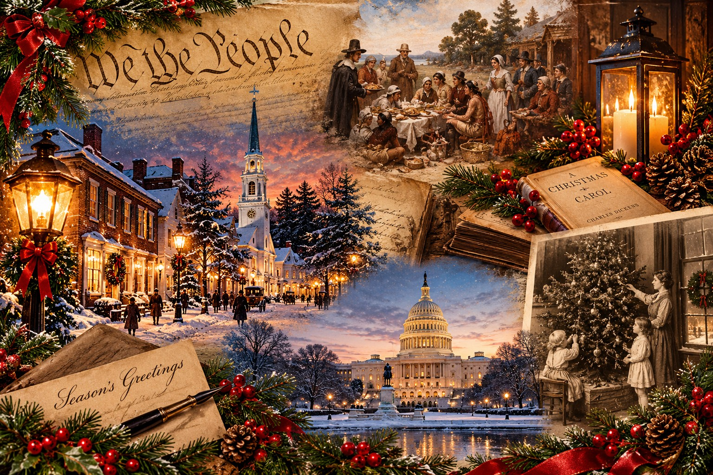
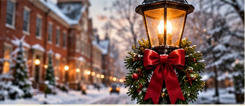
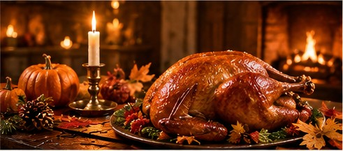
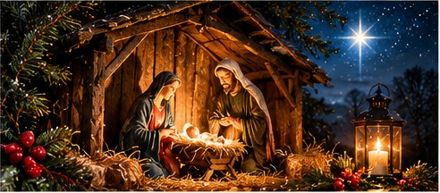
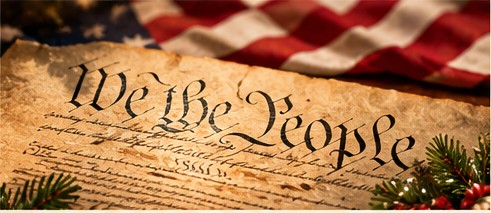
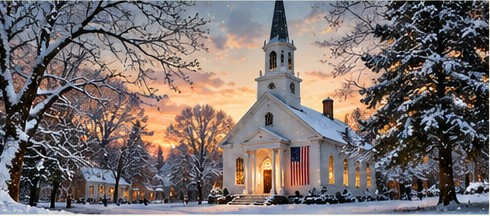
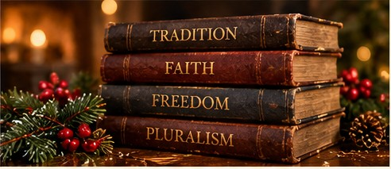

The American Holiday Season
Tradition, Religion, and the Freedom to Believe—or Not Believe
A historical and constitutional examination of the traditions we inherit, the beliefs we hold, and the freedoms we share.

I. The Season We Think We Know
Every year, as autumn gives way to winter, America enters a familiar season. Thanksgiving brings families together around tables, Christmas lights appear on homes and storefronts, familiar songs return to the radio, and the weeks between late November and the New Year become a period defined by tradition, celebration, generosity, and reflection. For many Americans, these customs are among the most enduring parts of our national culture. They connect generations, evoke memories of childhood, and provide a sense of continuity in a country that is constantly changing.
Yet beneath that familiar picture lies a more complicated story. The American holiday season is not simply the product of traditions passed unchanged from one generation to the next. It has been shaped by religious conviction, cultural adaptation, commercial interests, political decisions, and disagreements over what it means to live together in a nation founded on individual liberty. Some of the customs we regard as timeless are relatively recent developments. Others have changed substantially in meaning as the country around them has changed.

These differences become especially visible during the annual arguments over Christmas. Should a public institution display a Nativity scene? Is saying “Happy Holidays” an expression of courtesy toward people with different beliefs, or an unnecessary retreat from a familiar Christian greeting? When does the public expression of religious faith deserve protection, and when might government involvement cross a constitutional line? These questions are often presented as evidence of a country losing its traditions—or, from another perspective, as evidence of a country struggling to make room for everyone. The arguments can become so heated that the history and principles behind them disappear beneath the slogans.
But there is a larger question worth asking: How did America's holiday season develop into what it is today, and what does that history tell us about tradition, religious freedom, and the right to believe—or not believe?
Answering that question requires looking beyond the latest controversy. It means examining how national holidays were established, how Christmas evolved from a contested observance into a dominant cultural institution, and how the Constitution addresses the relationship between religious expression and government authority. It also means recognizing that the people who share the American holiday season do not necessarily share the same faith, the same customs, or even the same understanding of what the season represents.
That diversity need not make the season meaningless. Nor does respect for religious freedom require Americans to abandon the traditions that matter to them. The challenge is to understand where tradition ends and compulsion begins, where personal expression differs from government endorsement, and whether the principles we invoke to defend our own freedoms also protect those of our neighbors.
Thanksgiving provides the first case study: its journey from local observances to a national holiday shows how traditions acquire shared meaning through history, culture, and political choice.

II. The Holidays Were Made, Not Simply Inherited
The American holiday calendar can feel like a permanent feature of national life. Thanksgiving arrives on the fourth Thursday of November, Christmas follows in December, and the familiar sequence of gatherings, decorations, meals, and rituals seems to belong to the country as naturally as its seasons. Yet these holidays emerged through a long process of cultural change, political decisions, religious conviction, and deliberate efforts to establish shared traditions. Thanksgiving offers a particularly revealing example because its familiar origin story and its actual development into a national holiday are two different histories.
The distinction matters. National traditions often acquire a sense of inevitability after generations have repeated them. Children learn familiar stories, families preserve customs, and public ceremonies reinforce the impression that the nation has always celebrated in much the same way. We may give less thought to the people who shaped those stories, the political circumstances surrounding their decisions, or the experiences that were left outside the frame. Thanksgiving is both a meaningful American tradition and an example of how collective memory is constructed over time.
The Gathering at Plymouth—and the Story Built Around It
In the autumn of 1621, English colonists at Plymouth and members of the Wampanoag people participated in a harvest gathering that lasted several days. The event is commonly remembered as the First Thanksgiving, but that name was not used by the participants to identify it as the beginning of an annual American holiday. The surviving historical record is limited, and the familiar images of Pilgrims and Native Americans gathered around a carefully arranged feast owe much to later generations.
One of the most important contemporary accounts came from Edward Winslow, a colonist who described the gathering in a letter published in Mourt's Relation in 1622. Winslow reported that the colonists had completed their harvest, that their governor sent men to obtain game, and that a large group of Wampanoag arrived, including their leader, Massasoit, with approximately ninety men. The gathering continued for three days. Winslow's account gives us valuable evidence, but it does not provide the detailed menu, ceremonial program, or symbolic meaning that later popular representations would suggest.
The historical record also needs to be understood from the perspective of its limitations. The surviving descriptions were written by English colonists. They do not provide a corresponding account from the Wampanoag participants explaining how they understood the gathering or what they believed it signified. The Pilgrim Hall Museum's historical account identifies the two contemporary descriptions that historians use to reconstruct the event, while the Smithsonian's Native Knowledge 360° project emphasizes the importance of incorporating Indigenous perspectives into the broader story.
The Wampanoag were not supporting characters in a story about English colonists overcoming hardship. They were an established people with their own communities, political interests, traditions, and understanding of the land. Their relationship with the English settlers developed within a complicated environment shaped by diplomacy, competition, disease, and the consequences of earlier European contact. European explorers, traders, and enslavers had been interacting with Native communities in the region for decades before the Mayflower arrived.
The alliance that existed in 1621 served strategic purposes for both parties. The English colonists were struggling to establish themselves, while the Wampanoag faced their own political and regional circumstances. Indigenous knowledge of the land and its resources helped the settlers survive, but cooperation should not be mistaken for a simple story of friendship between two groups who had discovered a common purpose. Relations between English settlers and Native peoples changed over time, and the expansion of colonial settlements brought increasingly severe pressures on Indigenous communities.
In 1675–1676, King Philip’s War—also known as Metacom’s War—devastated Indigenous communities across New England and severely undermined Wampanoag sovereignty. The later history cannot be reduced to the gathering of 1621, just as the gathering itself cannot explain everything that followed. Both belong in an honest account of the region’s history. See also: Smithsonian National Museum of the American Indian: Rethinking Thanksgiving
Recognizing this complexity does not require Americans to abandon Thanksgiving or dismiss the value of gathering with family and friends. It requires distinguishing the 1621 gathering from the national story later built around it—a story that often emphasizes cooperation and gratitude while giving less attention to the political circumstances and the history that followed.
Nations connect their identities to particular events, people, and symbols. Those stories can provide continuity and shared purpose, but they can also simplify the past by emphasizing some experiences and obscuring others. A tradition can preserve an important memory without preserving every detail of the history from which it emerged.
Before Thanksgiving Became a National Holiday
Days of thanksgiving existed in colonial America long before the United States established a permanent national observance. Colonial governments and local communities designated special days in response to harvests, military victories, periods of hardship, or events interpreted as evidence of divine favor. These observances did not necessarily occur on the same date each year, nor did they form a continuous, uniform national celebration.
For many early Americans, thanksgiving was primarily a religious observance. Public proclamations could call on people to acknowledge God's providence, express gratitude for blessings, repent for wrongdoing, and pray for protection. Such days were part of a broader world in which religion and public life frequently overlapped, although the beliefs and practices of colonial communities varied considerably.
The political meaning of thanksgiving changed as well. A proclamation could recognize a religious obligation while also encouraging people to reflect on the condition of their community or government. Days of thanksgiving could mark the end of a conflict, celebrate a successful harvest, or acknowledge an event that leaders believed deserved public recognition. The observance therefore connected personal gratitude, religious conviction, and civic identity.
The American Revolution gave thanksgiving an additional political dimension. The struggle for independence and the establishment of a new government created circumstances in which public expressions of gratitude could reinforce a shared national identity. Yet the existence of such observances did not mean that the country already possessed the permanent Thanksgiving holiday familiar to modern Americans.
The distinction became important in 1789, when the new federal government was attempting to establish its authority under the Constitution. Congress adopted a resolution requesting that President George Washington recommend a day of public thanksgiving and prayer. Washington issued his proclamation on October 3, designating Thursday, November 26, as a day of national thanksgiving.
Washington's proclamation is revealing because it connected gratitude for the nation's past with hopes for the success of its new political system. It referred to the conclusion of the Revolutionary War, the establishment of constitutions, the creation of the national government, and the civil and religious liberty Americans enjoyed. It also explicitly called for thanksgiving and prayer to God.
The language was not merely ceremonial. Washington described the observance as an opportunity for Americans to reflect on the country's survival and political achievements while asking for continued guidance. He called on the public to give thanks for the opportunity to establish a government intended to secure the nation's safety and happiness.
The original proclamation can be read through the Mount Vernon transcription of Washington's 1789 Thanksgiving proclamation. Its language offers a useful reminder that early national thanksgiving observances could combine religious expression with civic purpose.
That combination also raises a question that remains relevant to our broader examination: how should we understand religious language used by public officials in the nation's early history? Washington's proclamation was explicitly religious, and that fact should not be concealed to make the past fit a modern political argument. At the same time, one presidential proclamation does not, by itself, resolve every constitutional question about religious expression and government authority. Historical context matters, and so does the distinction between describing an early practice and deciding what the Constitution permits today.
Washington designated a single day, not a permanent annual holiday. Later presidents issued proclamations at different times, and Thanksgiving dates varied until a recurring national observance gradually took hold.
The difference between a national observance and an annual holiday is important. A president could designate a day of thanksgiving without creating an enduring calendar tradition. For that to happen, Americans needed institutions and customs that would sustain the observance beyond a single administration.
Sarah Josepha Hale and the Campaign for a Shared Tradition
Sarah Josepha Hale, a writer and editor, spent decades advocating for a regular annual Thanksgiving. Her campaign shows that traditions sometimes become national not simply through spontaneous custom, but because people deliberately promote practices they believe will strengthen a community.
Hale promoted Thanksgiving through articles, editorials, and letters to political leaders. She regarded a common annual celebration as a way to strengthen national identity and encourage family life. At a time when the United States was expanding and changing, a shared observance could provide a familiar point of connection among people whose daily experiences and local customs differed.
Her campaign also illustrates the influence of print culture. Magazines and newspapers allowed an idea to circulate far beyond the community in which it originated. Editors could promote customs, describe desirable forms of family life, and encourage readers to imagine themselves as part of a wider national community. A holiday that might otherwise have remained regional or occasional could become the subject of a sustained public campaign.
Hale's advocacy did not single-handedly create Thanksgiving or guarantee political support. It helped make an annual national observance seem desirable and achievable, and it connected private persuasion with the authority presidents and lawmakers could use to establish a more regular public practice.
Hale's campaign also demonstrates that private advocacy and government action can reinforce one another. She promoted a national holiday, but presidents and lawmakers possessed the authority to turn the proposal into a more regular public observance. The resulting tradition developed through the interaction of public persuasion, political decision-making, and cultural acceptance.
Lincoln, the Civil War, and the Meaning of National Thanksgiving
Hale's efforts eventually converged with the presidency of Abraham Lincoln. On October 3, 1863, in the midst of the Civil War, Lincoln issued a proclamation calling on Americans to observe a national day of thanksgiving on the last Thursday of November.
The circumstances were extraordinary. The country was divided by a conflict that had already caused enormous suffering, and the outcome of the war remained uncertain. Lincoln's proclamation acknowledged both the blessings the country had experienced and the suffering that accompanied the conflict. It called on Americans to give thanks while remembering widows, orphans, mourners, and others affected by the war.
The proclamation's significance lies partly in that tension. Thanksgiving was not being established in a moment of uncomplicated national celebration. Lincoln was addressing a country in crisis, and his appeal for gratitude existed alongside an acknowledgment of the human cost of the conflict.
The text of Lincoln's 1863 Thanksgiving proclamation shows how closely the observance was connected to the political and moral circumstances of its time. Lincoln asked Americans to recognize the nation's blessings while also expressing humility and concern for those suffering in the war. His appeal for thanksgiving was linked to the hope that the country might eventually recover peace and unity.
Lincoln's proclamation gave Thanksgiving a regular place in national life. Presidents continued to issue annual proclamations, and the last Thursday of November became the established date; Congress would later settle the calendar through legislation.
It is tempting to treat Lincoln's proclamation as the inevitable culmination of an older tradition. Yet the history suggests a more complicated sequence: earlier regional observances, Washington's national proclamation, Hale's decades-long campaign, and Lincoln's decision during a national emergency all contributed to the modern holiday. No single event explains the entire result.
Thanksgiving's national recognition during the Civil War tied gratitude to a struggle over the country's future. Its association with unity was an aspiration as much as a description: the war continued, and the proclamation could not by itself reconcile the nation.
That history does not mean every American experienced Thanksgiving in the same way, or that the holiday resolved the country's divisions. The Civil War continued, and national unity remained a goal rather than an accomplished fact. But the proclamation helped establish a recurring public occasion through which Americans could reflect on their relationship to the nation.
Even an Established Tradition Can Become a Political Dispute
By the twentieth century, Thanksgiving had become a familiar part of American life. Its annual date was widely recognized, and the holiday was associated with family gatherings, public ceremonies, parades, football, and the beginning of the Christmas shopping season. Many Americans could reasonably assume that the date would remain unchanged.
Then came 1939.
President Franklin D. Roosevelt decided to move Thanksgiving from the last Thursday of November to the second-to-last Thursday. In that year, the traditional date fell on November 30, leaving fewer shopping days between Thanksgiving and Christmas. Business leaders feared that the shortened shopping season could hurt retailers during the continuing recovery from the Great Depression. Roosevelt's decision was intended to give the economy an additional week of Christmas shopping.
The change seemed practical to its supporters, but it quickly became controversial. Thanksgiving was a tradition that people had come to expect on a particular date. Schools, sporting events, parades, travel plans, and state observances had developed around the established calendar. Moving the holiday meant asking millions of people and institutions to adjust to a presidential decision.
The country did not respond uniformly. Some states followed Roosevelt's revised date, while others retained the traditional observance. For two years, Americans experienced competing Thanksgiving dates. The disagreement became known as “Franksgiving,” a nickname that captured the political nature of the dispute.
The controversy illustrates how a tradition can become a source of conflict precisely because it is so familiar. Roosevelt's supporters could argue that moving the date offered a practical economic benefit. Opponents could argue that the president was interfering with a well-established custom for commercial reasons. The disagreement was not simply about which Thursday was correct; it concerned who should have the authority to alter a national observance and how much weight economic considerations should receive.
Congress eventually settled the dispute. The House passed a resolution on October 6, 1941, naming the last Thursday in November; the Senate amended it to the fourth Thursday, and the House agreed. President Roosevelt signed the measure on December 26, 1941, establishing the fourth Thursday as the federal Thanksgiving holiday. The National Archives documents the competing dates and legislative process. See also: National Archives: Thanksgiving legislation
The episode is a useful reminder that even a holiday widely regarded as part of the nation's inherited identity can be shaped by economic concerns, presidential decisions, public resistance, and legislation. The date Americans now consider traditional is not proof that the tradition was always fixed. It is evidence that a political process eventually settled the question.
There is a larger lesson here. When people defend a tradition, they sometimes speak as though its current form is the only authentic form it has ever possessed. History often tells a different story. Customs can be old and meaningful without being unchanging. A tradition can survive disagreement, adapt to new circumstances, and become more firmly established because successive generations continue to recognize its value.
The lesson is not that every change is wise or that officials should alter traditions whenever a practical argument can be made. Roosevelt's decision generated real opposition, and the settlement shows that established customs carry expectations that cannot simply be dismissed. It also shows that the traditions Americans defend have themselves been shaped by argument, negotiation, and decisions about competing priorities.
What a National Holiday Tells Us About a Nation
Thanksgiving's development followed several paths: the 1621 gathering became the foundation of a national story; colonial religious observances and presidential proclamations broadened the practice; Sarah Josepha Hale campaigned for an annual celebration; Lincoln established its recurring national place during the Civil War; and Congress later settled the date.
These events do not make Thanksgiving less authentic. They show that authenticity does not require a tradition to have existed in its present form from the beginning. Traditions become meaningful through the ways people interpret, practice, and pass them on. Their histories can contain change, disagreement, and even political calculation without making their value disappear.
The history also raises a question about national memory. Which parts of the past do Americans choose to emphasize when they tell stories about who they are? Which experiences become central to the national narrative, and which remain less visible? The answers can change over time, as new evidence is examined and more voices are included.
Reconsidering the historical record does not require rejecting everything that came before. A fuller account can preserve the value of gratitude and fellowship while acknowledging the Wampanoag experience and the consequences of colonization. It can appreciate Lincoln's appeal for national reflection without pretending that unity had already been achieved.
This distinction will matter even more when we turn to Christmas. Thanksgiving's history shows how a national holiday can develop through religious practice, cultural storytelling, political action, and changing social priorities. Christmas followed a different path, but its modern American form was also shaped by conflict, adaptation, and the gradual expansion of customs that later generations would regard as familiar.
The broader lesson is not that national traditions are inventions to be discarded once their histories become complicated. It is that traditions are living parts of a society. They can preserve memories, express shared values, and give people a sense of belonging. They can also be reinterpreted as the nation changes and as Americans learn more about the people and events that shaped their past.
Understanding how Thanksgiving developed allows us to approach that process with greater clarity. We can value a tradition without insisting that its history be simple, and we can examine its origins without assuming that every later meaning is illegitimate. The holiday Americans celebrate today is both a product of history and a continuing expression of what people want it to mean.
Christmas presents an even more complicated example. Its place in American life has undergone a dramatic transformation—from a holiday contested by some early religious communities to one of the country's most prominent cultural, commercial, and religious seasons. To understand the debates that surround it today, we must first examine how that transformation occurred.

III. Christmas Wasn’t Always America’s Christmas
Ask Americans what Christmas means, and the answers may sound remarkably familiar. A decorated tree stands in the living room. Children wait for Santa Claus. Families exchange gifts, prepare special meals, and gather around traditions passed down through generations. Churches hold services celebrating the birth of Jesus Christ, while homes, storefronts, and public squares fill with lights, music, and seasonal decorations. For many people, these customs feel as though they have always belonged to Christmas, as natural and permanent as the date on the calendar.
But the Christmas Americans recognize today is not an unchanged inheritance from the nation’s founding. It emerged through centuries of religious disagreement, regional differences, immigration, literature, commercial innovation, and changing ideas about family and community. Some traditions arrived from Europe; others were reshaped by American writers and artists. Still others grew from the needs of businesses, the expectations of consumers, and the desire of a young nation to develop a recognizable cultural identity. The familiar holiday was assembled over time, and the process tells us something important about how American culture itself develops.
That history matters because modern arguments about Christmas often assume that there is one authentic American tradition that existed in its present form until something or someone came along to change it. The historical record is much less tidy. Americans have disagreed about whether Christmas should be celebrated, how it should be observed, what its meaning should be, and which customs properly belong to it. The holiday’s history is not a straight line from ancient religious observance to modern national celebration. It is a story of competing traditions that gradually came together, without ever becoming entirely uniform.
A Holiday the Colonies Did Not Celebrate in the Same Way
In colonial America, Christmas was not the universal celebration we know today. Whether December 25 was treated as a sacred occasion, a social holiday, an ordinary workday, or an invitation to excessive revelry depended heavily on where people lived and which religious traditions shaped their communities. The colonies were not culturally or religiously interchangeable, and their different approaches to Christmas reflected deeper disagreements about authority, worship, and the proper relationship between religious observance and everyday life.
In Virginia and other communities shaped by the Church of England, Christmas could be an established part of the religious and social calendar. Celebrations might include church services, feasting, visits, dancing, and entertainment. In New England, however, many Puritans viewed Christmas with suspicion. They objected to the absence of a biblical command establishing December 25 as the date of Christ’s birth and opposed customs they associated with Catholicism, superstition, disorder, and excessive drinking. For these critics, the fact that a practice was old or popular did not make it religiously legitimate.
The disagreement was not merely theoretical. In 1659, the Massachusetts Bay Colony enacted a law penalizing people who observed Christmas by refraining from work, feasting, or celebrating in other ways. The penalty was five shillings. The law reflected a particular religious and political culture in which Christmas was not simply an optional personal observance; public celebration could be treated as an offense against the community’s understanding of proper religious conduct. Massachusetts eventually repealed the restriction in 1681, but the change in law did not instantly produce universal enthusiasm for the holiday. Christmas remained unevenly observed for generations. Massachusetts Trial Court Law Libraries: Massachusetts Law Banning Christmas. See also: Massachusetts Bay Colony law text (1659) See also: HISTORY: repeal and colonial context
It is tempting to reduce this history to a simple story in which the Puritans hated Christmas and everyone else loved it. Reality was more complicated. Even outside New England, religious communities differed in their attitudes toward the holiday, and a community’s willingness to recognize December 25 did not mean that its residents practiced every custom now associated with Christmas. The modern combination of a decorated evergreen tree, elaborate gift-giving, Santa Claus, familiar songs, and a family-centered celebration was not the standard colonial experience.
Consider the Christmas tree. Many Americans now regard it as the defining visual symbol of the season, but the decorated indoor tree did not occupy that position in colonial life. Evergreen branches and other greenery could be used for seasonal decoration, while the elaborate tree tradition familiar today became more widely established during the nineteenth century. The National Park Service’s account of Christmas at Valley Forge emphasizes how different revolutionary-era observances could be from the modern holiday, including the fact that many familiar decorations and customs were not yet widespread. National Park Service: Christmas at Valley Forge. See also: Library of Congress: German Christmas-tree tradition
That distinction is worth remembering whenever someone invokes the Christmas of the Founding Fathers as evidence for how Americans supposedly have always celebrated. George Washington did observe Christmas, but his household’s practices should not be confused with the customs of every colonist. His Christmas season could extend beyond December 25, and celebrations at Mount Vernon included meals, guests, and entertainment. Elsewhere, some people treated the day as an ordinary working day, while others marked it through religious services or community festivities. There was no single colonial Christmas experience.
The Revolution did not immediately erase these regional differences. The new republic inherited communities with different religious histories, different customs, and different ideas about public life. The political project of creating one nation did not automatically create one national culture. Christmas would become one of the occasions through which Americans gradually developed a more shared seasonal identity, but that transformation took place long after independence and involved influences that could not have been predicted by the founders.
Inventing a Tradition That Felt Ancient
By the early nineteenth century, Christmas was changing. In cities such as New York, writers and cultural figures helped popularize a version of the holiday that emphasized hospitality, family, generosity, nostalgia, and the temporary suspension of social divisions. The emerging celebration drew on European customs, but it also responded to American circumstances: rapid urban growth, economic change, class tension, immigration, and the search for a cultural identity distinct from Britain.
One influential figure was Washington Irving, the American author best known for works such as Rip Van Winkle and The Legend of Sleepy Hollow. In The Sketch Book of Geoffrey Crayon, Gent., published in installments in 1819–1820, Irving presented scenes of Christmas celebration in an English country house. His sketches evoked hospitality and old-fashioned customs, imagining a season in which people of different social classes could come together in warmth and fellowship. The setting was English rather than American, but the emotional appeal was powerful for readers in a young country still developing its own cultural traditions. See also: HISTORY: History of Christmas
Irving’s contribution is revealing because the holiday he described was not a straightforward report of a single celebration he had witnessed. His literary presentation helped shape the public imagination of what a traditional Christmas ought to look like. By depicting customs as part of an inherited, harmonious past, he helped make those customs attractive to readers who might not have experienced them in that form. The stories did not need to be a documentary record of American Christmas in order to influence the American Christmas that followed.
Traditions are not simply inherited intact. People select, reinterpret, and sometimes create practices that meet the needs of the present. A literary account can become a model for real behavior; a custom from one place can be adapted elsewhere and eventually feel as though it has always belonged. That process does not make a tradition meaningless, but it does make its history worth examining.
The distinction between an old practice and an invented tradition is often less clear to participants than it is to historians. Once a custom becomes familiar, people may no longer remember when it first appeared or who helped popularize it. They remember how it feels: the scent of evergreen branches, the gathering of relatives, the anticipation of children, the warmth of a familiar story. The emotional reality becomes more important than the historical sequence that produced it. Over time, something relatively new can acquire the authority of something ancient.
Santa Claus Becomes an American Icon
The evolution of Santa Claus offers another example of how cultural traditions are created through exchange and reinvention. The figure has roots in the traditions surrounding Saint Nicholas, a Christian bishop whose reputation for generosity became associated with gift-giving. European communities developed different customs around Saint Nicholas and other winter gift-bringers. Dutch traditions were particularly important in New York, where the name Sinterklaas helped contribute to the American name Santa Claus.
The poem traditionally attributed to Clement Clarke Moore, “A Visit from St. Nicholas,” was first published anonymously in 1823 and is now commonly known by its opening line, “‘Twas the Night Before Christmas.” Its portrayal of a cheerful visitor arriving by sleigh, traveling with reindeer, and delivering toys helped establish enduring features of the modern Santa story. See also: Library of Congress: A Visit from St. Nicholas
The poem’s influence was substantial because it gave readers an unusually vivid character to imagine. Santa became not merely a religiously derived figure associated with generosity but a recognizable visitor with a personality, a mode of transportation, and a memorable ritual of arrival. Children could picture him. Parents could read the poem aloud. Illustrators could give him a face and a shape. Each retelling made the character more familiar, and familiarity helped turn a literary portrayal into a shared cultural expectation.
Illustrator Thomas Nast further shaped the familiar Santa Claus through nineteenth-century drawings for Harper’s Weekly. Later artists, advertisers, and retailers continued to develop the image. Modern Santa is the cumulative result of many contributions, not the invention of one person or a single moment. HISTORY: History of Christmas. See also: Smithsonian National Museum of American History: Santa Claus
The significance of Santa Claus extends beyond the character himself. Here was a figure whose origins were connected to Christian tradition but whose growing popularity could cross denominational lines. Families did not need to share the same theology to recognize the character, enjoy the stories, or participate in gift-giving rituals associated with him. Santa became part of the cultural Christmas, a figure who could coexist with religious observance while also taking on a life of his own in popular culture.
That distinction remains visible today. For some families, Santa is a beloved part of the season; for others, the religious significance of Christmas takes precedence, and Santa plays a minor role or no role at all. Some families treat him as a playful story for children, while others make his arrival a central event. These differences do not necessarily reflect different levels of affection for the holiday. They reflect the freedom families have to shape its customs around their own beliefs and priorities.
The character also reveals how cultural symbols can move beyond the traditions that produced them. Santa Claus draws from a religious figure, but his modern public image is not confined to a church setting. He appears in shopping centers, television specials, parades, advertisements, school celebrations, and community events. His presence is often more cultural than doctrinal. A figure associated with Christian history has become an icon of a broadly shared American season, even for people who do not observe Christmas as a religious holiday.
The Christmas Tree, the Christmas Card, and the Family Home
The decorated Christmas tree is another tradition whose modern place in American life was established through cultural exchange. Evergreen decorations had a long history in Europe, and the decorated indoor tree became particularly associated with German-speaking regions. During the nineteenth century, the practice spread more widely, helped by migration, changing tastes, and reports about royal and fashionable households. What had once seemed unfamiliar or foreign could become fashionable, then ordinary, and eventually indispensable in the popular imagination.
The tree’s rise is a reminder that cultural borrowing is not an exception in American history. Immigrants brought languages, religious practices, food, music, stories, and seasonal customs with them. Neighbors encountered those customs, adapted them, and passed them on. The resulting traditions did not always retain their original form or meaning. A custom could be detached from its first setting, altered by new materials and habits, and made part of a distinctly American household.
Christmas cards followed a similar path, combining new technologies of printing and distribution with the desire to communicate affection across distance. As travel and migration separated family members, written greetings offered a way to maintain social bonds. Cards also allowed people to exchange seasonal sentiments without having to meet in person, and the expanding market for printed cards made the practice easier to sustain. The holiday became not only something people did together but something they could send to others.
The growth of these customs coincided with a broader change in the way Christmas was imagined. Increasingly, the holiday was framed around the home and the family. Instead of being primarily a public celebration or a day of religious observance, Christmas became a season of domestic rituals: decorating rooms, preparing special meals, telling stories, exchanging gifts, and creating memories for children. Religious observance remained important, but the family home became a central stage on which the holiday was performed.
This transformation had social significance. In an era of urbanization, industrial change, and shifting class relationships, an idealized Christmas could offer a vision of stability and affection. The home became a refuge from the pressures of the outside world, and the holiday provided an opportunity to reaffirm relationships that daily life might otherwise strain. The ideal was never universally attainable—poverty, family conflict, illness, separation, and grief did not disappear for the season—but the image of the harmonious Christmas household became culturally powerful.
The family-centered holiday also changed the role of children. Gift-giving and the excitement of Santa Claus increasingly placed children at the center of the celebration. Parents could express affection through presents and rituals, while stories and decorations helped create a world of anticipation. Christmas became a time when adults were expected not only to observe a religious occasion or participate in community festivities but also to manufacture a particular kind of childhood memory.
That expectation carries forward into the present. Parents often feel pressure to make the season magical, to reproduce the traditions of their own childhoods, or to create even more elaborate celebrations for their children. For some, this is a source of deep joy. For others, it becomes a source of financial strain, exhaustion, or painful comparison with an idealized picture of family life. The emotional power of Christmas is inseparable from the expectations attached to it, and those expectations have been shaped by generations of cultural storytelling.
Dickens, Generosity, and the Meaning of Christmas
Few works of literature have contributed more to the modern emotional language of Christmas than Charles Dickens’s A Christmas Carol. Published in 1843, the story follows Ebenezer Scrooge, a wealthy and miserly man confronted with the consequences of his selfishness and given an opportunity to change. Through supernatural visitors and encounters with the lives of others, Scrooge is forced to reckon with suffering, loneliness, poverty, and the moral responsibilities that accompany wealth.
The story’s enduring appeal lies partly in the way it connects Christmas with a moral demand. The holiday is not merely a celebration of abundance or a pleasant interruption to ordinary life. It becomes an occasion to ask whether people have treated others with compassion, whether wealth has hardened them, and whether they can still change. Scrooge’s transformation gives the season a dramatic moral structure: selfishness is exposed, generosity becomes possible, and personal redemption is demonstrated through action.
Although Dickens was writing about Victorian Britain, American readers embraced the story and incorporated it into their own seasonal culture. Its popularity helped strengthen the association between Christmas, family affection, charitable giving, and goodwill toward others. The work became a shared reference point through which Americans could discuss the meaning of the season, even when they differed in religious practice or social position. Duke University Libraries: Christmas and Consumerism.
The story also highlights a tension that would remain central to Christmas: the difference between generosity as a moral commitment and generosity as a seasonal performance. Scrooge’s problem is not that he fails to purchase the right gifts or decorate his home. His problem is that he has organized his life around indifference to other people. His transformation matters because it changes how he treats those around him. The gifts and celebrations that follow are expressions of that change, not substitutes for it.
This distinction is worth preserving in a society where Christmas can generate intense pressure to buy, spend, and display affection through material goods. Purchasing a gift can be a meaningful expression of love, and commercial activity is not inherently incompatible with generosity. But no purchase can guarantee compassion, and no elaborate celebration can compensate automatically for neglect or cruelty. The moral message of A Christmas Carol is not that Christmas requires a particular level of spending. It is that the season can expose the distance between the values people profess and the way they actually live.
Dickens’s influence also demonstrates how literature can shape cultural practice without requiring people to accept a particular religious doctrine. The story’s moral language draws on Christian ideas of repentance, charity, and redemption, yet its central themes are accessible to readers with many different beliefs. Someone may appreciate Scrooge’s transformation as a Christian lesson, a humanistic argument for compassion, or a critique of a society that tolerates poverty alongside extraordinary wealth. The story can support those readings without becoming meaningless.
In that respect, A Christmas Carol offers a useful example of how American Christmas came to contain overlapping layers of meaning. A religious holiday could also be a family holiday, a moral occasion, a literary tradition, and a cultural event. Those meanings sometimes reinforce one another and sometimes pull in different directions. They do not have to be identical for people to share a seasonal story.
From Religious Celebration to National Holiday
The nineteenth century brought these different strands of Christmas into closer alignment. Religious observance remained important, but domestic customs, literature, immigration, print culture, and public celebration helped create a more recognizable national holiday. Christmas gradually became a common reference point across communities that had not always observed it in the same way. By the end of the century, many elements of the modern celebration were familiar, even though regional and religious differences persisted.
In 1870, President Ulysses S. Grant signed legislation establishing Christmas as one of the public holidays for federal employees in the District of Columbia. The statute did not make Christmas a universal religious observance or suddenly cause Americans to celebrate it; it formally recognized a day whose cultural significance had already grown. HISTORY: History of Christmas. See also: National Archives: federal holiday legislation
The distinction between cultural influence and legal recognition matters. A practice can become widespread before the government recognizes it, and official recognition does not mean that every citizen shares the same beliefs about the practice. The holiday’s growth was driven by many actors: religious communities, authors, illustrators, immigrants, families, publishers, retailers, and local institutions. Federal recognition was one milestone in that process, not its origin or its conclusion.
By this point, Christmas had become a layered institution. For Christians, it commemorated the birth of Jesus, though Christian traditions differed in how they observed the occasion. For many others, it was increasingly associated with family gatherings, generosity, seasonal music, food, decorations, and the anticipation of children. Some people participated in both religious and cultural observances; others embraced one dimension more than another. Still others did not celebrate the holiday at all.
The expansion of Christmas into a broadly shared cultural event did not eliminate its religious character. Churches continued to hold services, families continued to observe religious traditions, and the holiday remained deeply significant to believers. But the growth of cultural Christmas meant that participation no longer necessarily indicated a shared theological commitment. A person could enjoy a decorated tree, exchange gifts, attend a seasonal concert, or join a workplace celebration without affirming Christian doctrine. The same public custom could carry different meanings for different people.
This is not an argument that religious meaning became unimportant. It is an argument that the American holiday developed enough layers to accommodate multiple forms of participation. Its religious significance remained real, but it existed alongside cultural practices that had acquired their own lives. The result was a holiday that could be simultaneously intimate and public, sacred and secular, inherited and reinvented.
When the Marketplace Joined the Celebration
The commercial Christmas familiar to Americans today also developed over time. Businesses did not create the holiday from nothing, but they learned to participate in it, expand it, and profit from its growing cultural significance. As manufacturing, printing, retailing, and distribution changed during the nineteenth and twentieth centuries, seasonal goods became easier to produce and sell on a larger scale. Decorations, greeting cards, toys, specialty foods, and other gifts could be marketed to an expanding public.
Commerce and Christmas were not natural enemies. Merchants supplied goods people wanted, while advertising and displays helped define what a successful celebration might look like. As the holiday became more centered on children and family, buying gifts became a visible way to participate. The relationship worked in both directions: consumers shaped the market, and the market shaped consumers’ expectations.
Department stores helped transform shopping into a seasonal event. Elaborate window displays, special promotions, toy departments, and visits with Santa Claus made the retail environment part of the Christmas experience. A shopping trip could become a family outing; a store display could become a childhood memory; and the arrival of seasonal advertisements could signal that the holiday was approaching. Commercial spaces did not merely sell the objects of Christmas. They also helped stage the season.
Advertising added another layer by associating products with emotional ideals. A gift could be presented as proof of love, a new appliance as a path to a happier household, or an expensive purchase as a way to make a child’s Christmas unforgettable. The message was not always explicit, but the implication could be powerful: the right products could help deliver the perfect holiday. As commercial promotion expanded, the distinction between expressing affection and purchasing the means to express it became increasingly difficult to maintain.
Commercial Christmas is not simply a corruption of an otherwise pure tradition. Commerce helped people participate in customs they valued: a greeting card can convey affection across distance, a carefully chosen gift can communicate attention, and a toy can become part of a treasured memory. Commercial goods do not automatically erase the human meaning attached to them.
The problem arises when the marketplace turns an expression of affection into a test of adequacy. Families may feel that they have failed if they cannot afford the gifts shown in advertisements or the elaborate celebrations displayed in popular media. Parents facing economic hardship may experience the season not as a period of generosity but as a reminder of what they cannot provide. People grieving a lost loved one may encounter a public culture that insists everyone should be cheerful. The idealized Christmas can become a burden precisely because it promises a level of happiness no household can guarantee.
The tension is not resolved by declaring one side authentic and the other illegitimate. The important question is what these practices do in people's lives: whether gift-giving strengthens relationships or becomes an obligation that produces anxiety and debt; whether displays invite participation or imply that one form of celebration is the only acceptable one; and whether generosity is expressed as care or reduced to purchasing power.
One Holiday, Many Meanings
By the twentieth century, Christmas had become so deeply embedded in American public culture that it could seem inseparable from the nation’s identity. Seasonal music filled public spaces, retailers reorganized their calendars around holiday shopping, schools and workplaces developed their own celebrations, and familiar images appeared in films, books, advertisements, and television programs. Even people who did not celebrate Christmas religiously could hardly avoid encountering it. The season became one of the most visible annual expressions of American culture.
But widespread visibility should not be confused with universal belief. The fact that Christmas traditions became common did not mean that every American understood them in the same way or wished to participate in them. The United States continued to contain people from different Christian traditions, people from non-Christian religions, people who held no religious beliefs, and people whose relationships with Christmas were complicated by family history, personal conviction, or difficult experiences. Cultural familiarity did not erase those differences.
Nor did the holiday’s evolution follow a single, orderly path. Some traditions spread because families found them meaningful. Others became popular through literature or commercial promotion. Some practices were embraced by particular communities before becoming familiar elsewhere. Religious observance remained central for many people, while others increasingly understood Christmas through family, culture, or seasonal rituals. The result was not a clean replacement of religion by secular culture but an accumulation of meanings.
That history challenges a common assumption in contemporary arguments about Christmas: that there must be one correct version of the holiday, rooted in an unchanging national past, against which every modern practice can be measured. The historical record does not support that simple picture. Christmas has always been shaped by disagreement over what should be celebrated and how. Its traditions changed as Americans changed, and the process involved both deliberate choices and gradual cultural shifts.
This does not mean every custom is equally old or every historical claim is accurate. History can correct romanticized stories and distinguish documented practices from later inventions. But a custom's age alone cannot settle its value: a relatively recent practice can become meaningful, a widely shared practice need not be universal, and a symbol with religious roots does not require every person who encounters it to affirm a religious belief.
The more useful question is not whether American Christmas has changed. It plainly has. The question is whether Americans can acknowledge that history honestly while allowing people to preserve, reinterpret, or decline traditions according to their own convictions. A holiday with a complicated past does not need to be stripped of its meaning. It needs to be understood in its full complexity.
Christmas is a particularly powerful example because it brings together private belief and public culture. A church service is not the same thing as a municipal display. A family’s decision to celebrate Christmas is not the same thing as a government’s decision to endorse a religious message. A retailer’s seasonal decorations do not carry the same constitutional implications as a school-sponsored religious exercise. Yet in public debates, these distinctions are often blurred, as though every visible expression of Christmas were either an affirmation of faith or an attack on it.
American Christmas was shaped by religious convictions, writers, artists, immigrants, businesses, families, and changing social expectations. Its public meaning grew beyond any single institution or interpretation. That history does not answer every modern dispute, but it gives us a more accurate starting point.
The question at the heart of the next section is this: when a holiday rooted in religious tradition becomes part of public life, what does religious freedom require? Does it protect individuals and communities expressing their beliefs openly, and does it also protect those who do not share those beliefs from government-imposed religious observance? A constitutional democracy must distinguish the presence of religion in public life from government endorsement or compulsion.
Those questions cannot be answered simply by appealing to nostalgia or declaring that Christmas is—or is not—a religious holiday. Its history demonstrates that it has occupied several roles at once. To understand how those roles fit within American constitutional principles, we must turn from cultural history to the First Amendment, and to the difficult line between protecting religious expression and using public authority to promote religious belief.

IV. What Does Religious Freedom Actually Protect?
The American Christmas story brings us to a question that reaches far beyond December: What does religious freedom actually mean in a country whose people do not all share the same religious beliefs?
For some Americans, the answer seems straightforward. The United States was shaped by Christianity, Christmas has been part of American culture for generations, and people should be free to express their religious beliefs openly. For others, religious freedom requires something equally important: the government must not use its authority to endorse Christianity, pressure people to participate in religious observances, or treat citizens who follow different beliefs as outsiders. Both concerns involve religious liberty, and neither can be dismissed simply because the other exists.
The difficulty begins when we assume that protecting one person's religious expression necessarily threatens someone else's freedom. It does not. A person praying privately is exercising a liberty. A government official compelling someone else to pray raises a very different question. A church displaying a Nativity scene is expressing a religious belief. A public institution sponsoring a religious observance may raise constitutional concerns that do not apply to the church. The religious content of an act matters, but so do the identity of the actor, the authority behind the act, the surrounding circumstances, and whether participation is genuinely voluntary.
American constitutional law has spent generations trying to draw these distinctions. The answers have not always been consistent or easy to apply, and the Supreme Court's approach has changed over time. But the underlying challenge remains: how can a government protect religious belief without becoming an instrument of religious authority, and how can it avoid endorsing religion without treating religious expression as something that must be hidden from public view?
The answer begins with the First Amendment.
Two Clauses, Two Essential Protections
The First Amendment opens with a restriction on government power: “Congress shall make no law respecting an establishment of religion, or prohibiting the free exercise thereof.” Those two protections—the Establishment Clause and the Free Exercise Clause—address different dangers. One limits government involvement in establishing or promoting religion; the other protects people's ability to practice their religion. Together, they form the constitutional foundation of American religious liberty. Congressional Constitution Annotated: First Amendment.
The Establishment Clause is often invoked in arguments over religious displays on government property, prayer in public schools, and the role of religion in official ceremonies. Its purpose is not to make religious people invisible or to prohibit every reference to religion in public life. Rather, it places constitutional limits on government action in religious matters. The government cannot simply choose a faith, compel religious observance, or use its authority to establish the kind of official religious arrangement the Constitution forbids.
The Free Exercise Clause protects the other side of the relationship. Individuals do not surrender their religious freedom when they enter public life, work for the government, attend a public school, or participate in civic affairs. Religious people retain rights to worship, pray, speak about their beliefs, wear religious clothing, and practice their faith, subject to applicable constitutional principles and lawful limits. A government that prohibits religious expression simply because it is religious can violate the very liberty the First Amendment is designed to protect.
These protections can overlap, but they can also create difficult questions. A teacher's personal prayer is religious expression. A teacher directing students in prayer is a different act, particularly when the teacher is acting with the authority of a public school. A city permitting a religious group to display a Nativity scene under the same rules that govern other private displays is not necessarily doing the same thing as the city itself sponsoring a religious ceremony. Constitutional analysis requires attention to those distinctions rather than treating all visible religion as equivalent.
The two clauses are not competing promises in which one must be sacrificed to make the other work. They are parts of a broader effort to prevent the government from controlling religious belief while protecting individuals from government interference with their religious lives. That effort can be difficult to administer, but the difficulty does not make either protection expendable.
This is why the phrase separation of church and state can be helpful but also misleading when used carelessly. It is a familiar shorthand for the constitutional limits on government involvement in religion, but it does not appear in the First Amendment itself. It is not a command that religious people must separate their beliefs from every aspect of civic life. Nor does it mean that every religious reference in a public setting is unconstitutional. The actual legal questions concern government power, religious liberty, endorsement, coercion, and the specific circumstances of the disputed action.
The Constitution does not require Americans to agree about religion. It requires a legal framework within which disagreement can exist without the government imposing religious belief or suppressing religious practice.
The Founding Generation and Religious Liberty
The Constitution's treatment of religion emerged from a history in which religious institutions and political authority had often been closely connected. In parts of Europe, governments had established churches, supported particular religious institutions, and punished people whose beliefs or practices fell outside accepted boundaries. Religious dissent could carry legal and social consequences. The American colonies themselves had different arrangements: some supported particular churches or religious establishments, while others developed stronger traditions of religious dissent and toleration.
The founding generation inherited those experiences and disagreed about the proper role of religion in public life. Many founders believed religion was important to morality and civic virtue. At the same time, influential political thinkers argued that government control over religion endangered both religious conscience and political liberty. Their concern was not limited to the possibility that a government might establish a religion they disliked. It also included the danger of giving government officials power to decide which beliefs deserved protection.
James Madison's 1785 Memorial and Remonstrance Against Religious Assessments became a significant statement of that concern. Madison opposed a proposal to support religious teachers through public taxation, arguing that religious conviction must not be placed under the authority of the civil government. His position reflected the idea that conscience belongs to the individual, not to the state. Government should not determine a person's religious obligations or compel citizens to finance religious instruction as a condition of civic membership. See also: National Constitution Center: Madison’s Memorial and Remonstrance (1785)
Thomas Jefferson expressed a related idea in his 1802 letter to the Danbury Baptist Association, in which he used the phrase “wall of separation between Church & State.” Jefferson was describing his understanding of the First Amendment's restrictions on government, not announcing that religion must be excluded from society. His phrase later became influential in legal debates, but its precise application has been contested throughout American history. See also: Library of Congress: Jefferson’s Letter to the Danbury Baptists (1802)
The historical record does not show a founding generation that agreed on every question about religion. Nor does it establish that the founders envisioned a society in which religious belief would have no public influence. Many were openly religious; some were not orthodox Christians; and their views on the relationship between religion and government varied. What matters constitutionally is not whether every founder held the same philosophy but what the Constitution's protections mean and how they limit government power.
The First Amendment originally restricted the federal government. The Fourteenth Amendment, adopted after the Civil War, later became the constitutional basis for applying the First Amendment's religion protections to state and local governments through Supreme Court interpretation. As a result, a public school district or municipal government cannot simply disregard the First Amendment because it is not part of the federal government.
That development is important to holiday disputes. The fact that a tradition has long existed in a particular community does not, by itself, settle whether a modern government action involving that tradition is constitutional. Historical practice can be relevant, but it must be considered within the constitutional framework that applies today. Equally, the existence of constitutional limits does not mean that every practice with religious origins must be prohibited. The task is to determine whether the government is respecting religious freedom or crossing into an impermissible exercise of religious authority.
Religious Freedom Is Not Religious Erasure
One of the most persistent misunderstandings in American debates about the First Amendment is the claim that government neutrality toward religion necessarily means hostility toward religion. Under that view, if a public institution does not sponsor a Christian display or organize a prayer, it must be taking an anti-Christian position. But neutrality and hostility are not the same thing.
Religious neutrality is not hostility toward religion. It does not require religious citizens to hide their convictions or exclude religious arguments from public debate. It limits government power so that officials do not impose belief, privilege one faith, or punish people for holding different convictions.
The distinction becomes clearer when we consider what the alternative would mean. If government officials were empowered to decide which religious observances deserved official recognition, whose traditions should receive public support, and which citizens should be expected to participate, religious freedom would depend heavily on who held power. A majority might use public institutions to reinforce its own beliefs. A minority might find its practices ignored or treated as suspect. Political changes could then change the government's religious priorities, leaving individual liberty exposed to the preferences of the moment.
A constitutional framework that limits government involvement in religion is meant to avoid that outcome. It protects Christians from government interference with their worship, but it also protects Jews, Muslims, Hindus, Buddhists, members of other faiths, and people who do not identify with any religion. The government does not need to decide which beliefs are true in order to protect the right of people to hold and practice them.
That protection is not a guarantee that every religious practice will be accepted by every neighbor or that every institution must accommodate every request in every circumstance. Religious freedom exists alongside other constitutional rights and legitimate government responsibilities. Disputes can arise over employment, public safety, discrimination, education, and the boundaries of religious exemptions. But disagreement over those questions does not justify abandoning the basic principle that government should not dictate religious belief.
Religion has played a complicated role in American history, contributing to reform movements and civic life while also being used to justify exclusion and unequal treatment. That history is a reason to protect freedom of conscience, not to give government authority over conscience. The constitutional question is what government does—not whether individual citizens have religious motivations.
The Constitution does not require citizens to leave their moral convictions at home before participating in public debate. Religious citizens may argue for policies based on their beliefs, just as secular citizens may argue from philosophical, ethical, or personal commitments. The constitutional question is not whether a person has religious motivations. It is whether government action respects the rights and freedoms of the people subject to it.
The Supreme Court and the Christmas Display
These principles become concrete when we examine the Supreme Court's holiday-display cases. Two decisions, Lynch v. Donnelly in 1984 and County of Allegheny v. ACLU in 1989, illustrate how the Court has wrestled with the relationship between religious symbols, public property, and government endorsement.
In Lynch v. Donnelly, the city of Pawtucket, Rhode Island, included a Nativity scene in an annual Christmas display. The display also contained a Santa Claus house, a Christmas tree, and a banner reading “SEASONS GREETINGS.” The Nativity scene was challenged as a violation of the Establishment Clause. In 1984, the Supreme Court upheld the city's display, considering the Nativity scene in the context of the larger seasonal presentation and the government's stated purpose of recognizing the holiday. Lynch v. Donnelly, 465 U.S. 668 (1984).
The ruling did not establish that every Nativity scene on government property is constitutional. The Court's analysis depended on the circumstances of the particular display, including its broader setting and the city's stated purpose. The decision reflected the view that the presence of a religious symbol in a public holiday display did not automatically amount to an unconstitutional establishment of religion. The context mattered.
Five years later, the Court considered holiday displays in Pittsburgh in County of Allegheny v. ACLU. The dispute involved two different arrangements: a Nativity scene placed on the grand staircase inside the Allegheny County Courthouse, and a large menorah displayed outside the City-County Building next to a Christmas tree and a sign saluting liberty. The case required the Court to assess the displays separately rather than assume that all religious symbols in the same holiday season raised identical constitutional questions. County of Allegheny v. ACLU, 492 U.S. 573 (1989).
The Court concluded that the Nativity scene inside the courthouse violated the Establishment Clause, while it upheld the menorah display in its particular context. The location and presentation were central to the analysis. The Nativity scene stood alone in a prominent part of a government building, making it more readily appear to be an official religious message. The menorah, by contrast, stood outside alongside a Christmas tree and a sign saluting liberty, creating a different overall presentation.
These cases show why a religious symbol cannot be judged by its presence on public property alone. The identity of the sponsor, the setting, and the overall presentation matter. The cases remain important historical precedents, but they should not be treated as a complete statement of current Establishment Clause doctrine; the Supreme Court's later decisions have changed the framework used in these disputes.
The cases also show that the law has not always produced a simple rule that everyone finds intuitive. The decisions involved close judgments about context and meaning, and justices disagreed about how the constitutional principles should apply. Their disagreements were not evidence that religious freedom was unimportant. They reflected the difficulty of applying a broad constitutional command to the complicated circumstances of public life.
For Christmas debates, the lesson is straightforward: neither “it is a religious symbol, so it must be forbidden” nor “it is a longstanding tradition, so it must be allowed” is an adequate constitutional analysis. The relevant questions include who is sponsoring the display, where it appears, how it is presented, what message the government's participation conveys, and whether the arrangement amounts to an impermissible governmental endorsement of religion under the governing legal framework.
What About Prayer in Public Schools?
Holiday displays are only one part of the debate. Public-school prayer is often more contentious because schools involve children, compulsory attendance laws, and the authority of teachers and administrators. A religious display that people pass on a public sidewalk is not equivalent to a teacher leading students in prayer during class. The setting and relationship between the government and the people involved matter enormously.
Public schools may teach about religion as part of a properly designed academic curriculum. Students can study the historical influence of Christianity, Judaism, Islam, Hinduism, Buddhism, and other religious traditions in literature, history, art, and political thought. Teaching about religion is not the same as teaching students to practice a religion. The constitutional concern arises when a public school uses its institutional authority to promote religious belief or compel participation in religious exercises.
Students do not lose their individual religious rights when they enter a public school. They may pray privately, discuss religious ideas, and engage in religious expression within the same general framework of rules that governs other student expression. Schools cannot simply treat a student's religious identity as a reason to exclude them from ordinary opportunities. At the same time, students should not be made to feel that their participation in school activities depends on joining a religious exercise favored by teachers or school officials.
The distinction is particularly important when a teacher or coach is involved. School employees have their own constitutional rights, including rights to religious expression, but they also act in positions of public authority. A student's ability to decline a teacher's invitation to pray may be affected by the teacher's influence over grades, playing time, discipline, recommendations, or social standing. The law must account for both the employee's liberty and the institution's obligation not to use its authority to impose religious observance.
In Kennedy v. Bremerton School District, decided in 2022, the Supreme Court considered the case of Joseph Kennedy, a public high-school football coach who prayed at midfield after games. The school district suspended him because it believed his conduct created a constitutional problem. The Supreme Court ruled in Kennedy's favor, concluding that the district had violated his rights under the Free Exercise and Free Speech Clauses. The Court emphasized that the Constitution neither requires the government to suppress personal religious expression nor permits it to do so merely because the expression is religious. Kennedy v. Bremerton School District, Supreme Court opinion (2022).
Kennedy should not be simplified into a ruling that public-school employees may lead students in prayer. The Court characterized the coach's conduct as personal religious observance and held that the district violated his Free Exercise and Free Speech rights under the circumstances presented. The decision did not erase the distinction between an employee's private religious exercise and school-sponsored religious activity, particularly where students may feel pressured to participate.
Kennedy also marked a change in the Court's Establishment Clause approach. The majority rejected the Lemon framework and said the clause should be interpreted by reference to historical practices and understandings. That shift changes the framework for evaluating government involvement with religion; it does not make every practice constitutional merely because a historical analogue can be claimed. Congressional Constitution Annotated: Establishment Clause and Historical Practices and Tradition.
The decision has also been criticized. Justice Sonia Sotomayor's dissent raised concerns about the majority's characterization of the facts and the effect of a coach's public prayer on students. Those concerns deserve to be understood rather than dismissed as hostility toward religion. A school employee may experience a prayer as a personal act of conscience, while a student may experience the same moment as a signal of what the coach values or expects. Constitutional analysis has to take seriously the rights of the employee and the realities of the school environment.
That is precisely why the debate cannot be reduced to a choice between religious freedom and secular hostility. Kennedy's right to engage in personal religious observance mattered. So did the constitutional obligation of a public school not to coerce students into religious activity. Protecting one right does not make the other disappear; it requires a careful examination of the conduct, the setting, and the government's role.
A Public Holiday Is Not a Public Profession of Faith
Now return to Christmas. A city may acknowledge the holiday as part of the cultural calendar. A public library may host a seasonal concert. A school may teach students about the historical and cultural significance of Christmas, just as it may teach about other religious traditions. A community may hold a privately organized Nativity display in a public forum under neutral rules. These examples are not automatically unconstitutional merely because they involve a holiday with religious origins.
But other arrangements raise different questions. If a public school directs students to participate in a Christian prayer, if a government office uses its authority to pressure employees to affirm a particular religious belief, or if a public institution presents one faith as the official faith of the community, constitutional concerns become more serious. The fact that Christmas is familiar or popular cannot settle those questions by itself.
The distinction is not between religious people and nonreligious people. It is between the freedom of people to practice and express their beliefs and the power of government to sponsor, favor, or impose religious observance. That line can be difficult to draw in a particular case, but it is essential to the constitutional arrangement.
Consider a public Christmas concert. If a community group organizes a performance in a public venue that is made available under neutral rules, the presence of religious music does not automatically establish that the government endorses the faith expressed in the songs. If a public school sponsors an event that requires students to perform religious material as an act of worship, the analysis is different. The same song may be part of an academic study, a voluntary cultural performance, a church service, or a government-sponsored religious exercise. Its meaning and legal implications depend in part on what is happening around it.
Or consider a public employee who wishes to wear a small religious symbol. A policy that prohibits the symbol simply because it communicates religious identity may raise free-exercise or free-speech concerns. A different question arises if an employee uses official authority to pressure members of the public to accept a religious message. The government must not confuse an employee's personal identity with the government's own official position, but neither may it assume that all religious expression by a public employee is an official act.
These distinctions require more thought than a slogan can provide. They also require us to resist the impulse to treat every controversy as proof that one side is trying to destroy the country. Some disputes involve genuine constitutional violations. Others involve disagreement over custom, etiquette, institutional policy, or the meaning of public space. Still others become political controversies because the dispute offers a convenient symbol for a much larger cultural argument. Those categories should not be treated as interchangeable.
A constitutional democracy must be able to distinguish a violation of religious liberty from a disagreement about tradition. If government compels religious observance, that is a serious matter. If government suppresses personal religious expression without a sufficient constitutional basis, that too is serious. But a person who encounters a different seasonal greeting, a neighbor who does not celebrate Christmas, or a business that chooses a more inclusive message has not necessarily suffered a constitutional injury.
The Constitution protects the right to practice religion and the right not to practice religion. It does not promise that every public institution will mirror the beliefs of every citizen, or that every person will encounter only customs they personally endorse. Living in a pluralistic society means sharing public space with people whose convictions may differ from our own. Freedom protects that difference; it does not eliminate it.
The Consistency Test: Would We Defend the Same Freedom for Everyone?
Higher Ideals returns repeatedly to a basic question: Are we applying our principles consistently, or are we defending a principle only when it benefits our own side?
Religious liberty is an especially useful test. Would we defend a Christian who prays privately at work, a Jewish student who wears a religious symbol at school, a Muslim employee seeking a lawful accommodation, and a nonbeliever who declines to join a prayer—even when the choice differs from our own convictions? Would we recognize the same protection if the religious majority changed?
The test works in the other direction, too. Suppose a public official uses government authority to promote a religion we personally favor. Would we still insist that the government must respect the religious freedom of those who disagree? Would we accept the same conduct if the official promoted another religion, or a religious doctrine we considered mistaken? If the constitutional principle changes depending on who is exercising power, we are not defending religious liberty as a principle. We are defending our own preference.
This does not mean every religious claim is identical or every accommodation request must be granted. Specific cases can involve competing rights and legitimate public interests. The point is that constitutional protections cannot be assigned according to popularity or theological agreement. A right that exists only for the majority is not a reliable protection of individual liberty.
The same test applies to the Establishment Clause. If we object when a government institution promotes a religion we dislike, we should consider whether we would object to the same use of government authority if it promoted our preferred faith. If we believe public officials should not impose religious observance on others, that principle must hold even when the observance reflects our own beliefs. Otherwise, we are asking government to protect us from religious power while reserving that power for ourselves.
The challenge is to distinguish a government's respect for religion from its adoption of religion as an official position. People should be free to express religious convictions in public. Religious communities should be free to organize, worship, educate, and celebrate within the law. Citizens should be able to advocate policies motivated by their beliefs. But government must also protect the rights of citizens who reject those beliefs, and it must not make religious conformity a condition of full participation in civic life.
That principle is not anti-Christian, anti-religious, or anti-American. It is a way of protecting the freedom of conscience that allows people with different convictions to live under the same constitutional system. The freedom of a Christian to celebrate Christmas is not strengthened by forcing a non-Christian to join the celebration. Nor is the freedom of a non-Christian strengthened by prohibiting Christians from expressing their beliefs in appropriate public settings. Each liberty must be protected on its own terms.
The Right to Believe—and the Right Not to Believe
Religious freedom includes a freedom that can be overlooked in a season when participation is so culturally visible: the right not to believe, not to worship, and not to celebrate a religious holiday. That right does not require people to be hostile toward religion. It simply means that a person's conscience cannot be treated as a public possession, available for government or community assignment.
For some Americans, Christmas is the most important religious observance of the year. For others, it is primarily a family tradition. Some celebrate it culturally without accepting Christian beliefs. Some observe other religious holidays instead. Some do not observe any religious holidays. Some may have mixed feelings because the season brings memories of loss, family conflict, or exclusion. A pluralistic society should not assume that one experience represents everyone.
At the same time, people who do not celebrate Christmas should not assume that its visibility automatically represents a threat to their rights. A neighbor's Nativity scene, a church's Christmas service, a religious song performed by a community choir, or a family's holiday gathering can be an ordinary expression of belief and tradition. The constitutional question becomes more serious when government authority is used to sponsor or compel religious observance, not merely when religious people live openly according to their convictions.
The line between personal expression and government endorsement can be contested, and court decisions will continue to shape how it is applied. But the underlying principle is worth stating plainly: religious liberty cannot mean that one group is free to practice its beliefs only so long as everyone else shares them. Nor can it mean that religious expression must disappear from public life to protect people who do not believe. Both positions would narrow the freedom the Constitution is intended to protect.
The American experiment depends on the ability to disagree without turning every disagreement into a contest for control over everyone else's conscience. People may believe Christianity is true, another religion is true, or that no religion is true. They may celebrate Christmas as a sacred day, a cultural tradition, or not at all. The Constitution does not resolve those theological questions. It establishes boundaries around the government's role in them.
That is the crucial distinction for our holiday debate. Christmas can remain meaningful to Christians without becoming a required profession of faith for the nation. Public institutions can respect the holiday's cultural significance without treating religious observance as a test of citizenship. People can defend the freedom to celebrate Christmas while defending the freedom of their neighbors to celebrate differently—or not to celebrate at all.
Religious liberty is not the promise that we will all believe the same things. It is the promise that we do not have to.
And yet, despite the constitutional principles and the history behind them, every year brings renewed claims that Christmas is under attack. Sometimes those claims identify a genuine dispute about government authority or religious expression. Other times, they turn ordinary cultural changes into evidence of a national conspiracy against faith. To understand why the argument has become so politically powerful, we must examine the modern “War on Christmas”—what it gets right, what it exaggerates, and how the debate itself has become part of American political culture.

V. The “War on Christmas” in a Changing America
Every year, as December approaches, an argument returns to American public life. Someone wishes a customer “Happy Holidays” instead of “Merry Christmas.” A school changes the name of a seasonal concert. A business advertises a winter sale without using religious language. A public institution decides how to handle a Nativity scene, a menorah, or another symbol associated with a religious holiday. Before long, a seemingly ordinary decision becomes evidence in a much larger controversy: the “War on Christmas.”
The phrase suggests a coordinated effort to destroy Christmas, suppress Christianity, or erase a defining part of American identity. It transforms disagreements over greetings, public displays, commercial practices, and constitutional boundaries into a story of national conflict. There are genuine questions underneath some of these controversies, but the claim of a broad war requires evidence of something much larger than an awkward greeting or a change in a store's advertising.
To understand the debate, we have to separate several things that are often bundled together. There are actual disputes over religious freedom and government authority. There are disagreements about etiquette and cultural recognition. There are commercial decisions made in response to customers. And there are political narratives that use these events to tell a larger story about who America belongs to and who is supposedly taking it away.
These categories overlap, but they are not interchangeable. A government that suppresses an individual's lawful religious expression raises a serious constitutional question. A private company choosing “Happy Holidays” for its advertising raises a different question, usually involving business judgment and customer expectations. A public school deciding whether an event is educational, religious, or coercive presents still another set of concerns. Treating every example as proof of the same conspiracy prevents us from understanding any of them accurately.
The “War on Christmas” is therefore worth examining not merely as a debate about a holiday but as a case study in how Americans turn cultural change into political conflict. What begins as a disagreement about language or tradition can become an argument about national identity, religious liberty, political power, and the meaning of being American.
From Cultural Complaint to Political Campaign
The modern “War on Christmas” narrative draws together different kinds of disputes. Some involve genuine questions of religious discrimination, free exercise, or government-sponsored religious practice. Others concern private choices and cultural customs—such as a retailer's greeting—that people may dislike but that do not automatically violate anyone's rights. A third category consists of political or media claims that treat cultural change as proof of coordinated persecution. These categories should be examined separately rather than assumed to be the same story.
But the modern phrase “War on Christmas” developed into a recurring national media story much more recently. The political commentator John Gibson published The War on Christmas: How the Liberal Plot to Ban the Sacred Christian Holiday Is Worse Than You Thought in 2005, and Fox News host Bill O'Reilly helped popularize the claim that secularization and politically correct language represented a concerted assault on Christmas. The theme gained prominence in conservative media and became a recognizable annual feature of the holiday season. TIME: A Brief History of the War on Christmas.
The timing matters. The United States had experienced disputes over religion in public schools, religious displays, and the meaning of church-state separation long before the phrase became a seasonal political fixture. What changed was the way those disputes were gathered into a single narrative. Separate events—some significant, some trivial, and some inaccurately reported—could be presented as parts of one continuous campaign against Christmas.
The narrative also gave a familiar cultural anxiety a memorable name. A person who believed that religious traditions were losing their place in public life no longer had to explain a complicated set of concerns. The phrase “War on Christmas” offered an immediate interpretation: something valued was under attack, someone was responsible, and defending the holiday was a way to defend the country itself.
That framework is politically useful because it turns a complicated question into a conflict with identifiable sides. One side is portrayed as defending Christianity, tradition, and the American way of life. The other is portrayed as attempting to remove Christmas from public life, often through political correctness, secular activism, or hostility toward religion. Once the dispute is framed in those terms, even a minor disagreement can become a test of loyalty.
The problem is not that cultural change should never be criticized. Americans are entitled to debate the role of religion in public life, and Christians are entitled to express concern when they believe their religious liberty is threatened. The problem arises when the conclusion is built into the description of the event. If every change in public language is defined in advance as an attack, there is no room left to determine whether an actual violation occurred.
A useful historical distinction follows: disputes over Christmas are old, but the modern claim that a coordinated “war” is being waged against the holiday is a particular political framing of those disputes. The existence of an earlier controversy does not prove that the modern narrative is accurate, and the existence of exaggerated claims does not prove that every underlying concern is baseless.
That is where the evidence has to begin.
The Greeting That Became a Political Statement
The greetings “Merry Christmas” and “Happy Holidays” have become political symbols because they are often treated as proxies for a larger argument about Christianity's place in American life. But a private person's choice of greeting, or a retailer's decision about seasonal language, is not by itself a constitutional question. The relevant analysis changes when government authority or coercion is involved.
For many Christians, “Merry Christmas” is more than a casual greeting. It expresses a sincere religious conviction, a family tradition, or a sense of connection to a familiar cultural inheritance. They may see the phrase as an appropriate acknowledgment of the holiday they are celebrating, and they have every right to use it. There is nothing inherently hostile or exclusionary about a person wishing someone a Merry Christmas.
But the same principle applies to “Happy Holidays.” The phrase does not necessarily deny Christmas, criticize Christianity, or suggest that religious belief should be removed from society. It can simply acknowledge that people celebrate different holidays at roughly the same time of year, or that a business serves customers whose beliefs and customs vary. Someone using the phrase may be Christian, Jewish, Muslim, nonreligious, or something else entirely. The greeting alone does not tell us.
The reverse is also true. A person who says “Merry Christmas” should not automatically be accused of trying to impose Christianity on everyone else. A greeting is usually an ordinary expression of goodwill. It becomes a more serious issue only when additional circumstances change its meaning—for example, when an official uses government authority to pressure someone to participate in a religious observance, or when an institution treats people differently because of their beliefs.
This is the difference between an expression of personal conviction and an exercise of institutional power. A customer wishing a cashier Merry Christmas is not the same thing as a public official requiring citizens to affirm a religious message. A business choosing a seasonal greeting is not the same thing as a government banning a religious phrase. The words may be similar, but the actors, authority, and consequences are different.
There is also a practical question that rarely receives enough attention: what exactly would it mean to require every business to use “Merry Christmas”? Would a retailer be compelled to use the phrase in advertisements? Would an employee have to say it to every customer? Would a company be accused of attacking Christianity if it chose different wording for a national campaign? The more the dispute moves from defending the freedom to use a phrase toward demanding that others use it, the more it risks undermining the very liberty it claims to protect.
The right to say “Merry Christmas” includes the right to say it sincerely and openly. It does not automatically include the right to dictate the language used by every private employer, retailer, neighbor, or public institution. Defending a tradition and compelling universal participation are different projects.
The consistency test is straightforward. If a Christian is free to offer a religious greeting, should a Jewish person be free to offer a Hanukkah greeting? Should a Muslim be free to offer a greeting associated with a religious observance? Should a person who does not celebrate a religious holiday be free to use a general seasonal greeting? If we defend only the expression we personally prefer, we are not defending freedom of expression as a principle. We are defending our own cultural preference.
The greeting debate reveals how a small choice can become a symbol of a much larger anxiety. The words themselves are usually not the real issue. The deeper concern is whether the culture is changing, whether a familiar majority tradition is losing its presumed central position, and whether that change should be understood as a loss of freedom. Those are questions worth discussing, but they cannot be answered simply by counting how many times a retailer prints one phrase rather than another.
What Is Actually Happening in Public Schools?
School controversies can be more complicated than retail greetings because public schools are government institutions, children may be required to attend, and teachers and administrators exercise authority over students. The Constitution does not require schools to pretend that Christmas has no religious significance. It does, however, place limits on the use of public-school authority to promote or compel religious practice.
A school may teach students about Christmas as a historical and cultural phenomenon. It may discuss the holiday's religious significance, its influence on music and literature, and its role in American history. A school may also recognize that religious holidays affect the calendar and the lives of students and families. Academic instruction about religion is not the same thing as religious instruction intended to cultivate belief.
The legal questions become more complicated when a school organizes a concert, stages a religiously themed performance, sponsors a display, or involves students in prayer. The purpose of the activity, the manner in which it is presented, the role of school officials, and the expectations placed on students all matter. A religious song performed as part of an educational program is not automatically equivalent to a school-led act of worship. Nor does the mere presence of a religious symbol prove that the school has established a religion.
This distinction is frequently lost in simplified accounts of school controversies. A report that a school removed a Nativity scene may omit whether the scene was school-sponsored, privately provided, part of a broader display, or challenged because of the location and circumstances. A report that a school permitted Christmas music may omit whether the program was an academic performance or a devotional exercise. Without those facts, the headline cannot tell us whether the decision was constitutionally required, institutionally prudent, or poorly reasoned.
Some restrictions on religious expression can indeed be unjustified. Students retain constitutional rights, including the ability to express religious beliefs within applicable rules. Teachers and other public employees also have rights to religious expression, although the relationship between personal expression and official duties requires careful analysis. A blanket policy that treats all religious expression as forbidden simply because it is religious may itself raise serious questions.
But there are also real limits on what a school may do. Public-school officials cannot use their positions to compel students to participate in religious exercises. The concern is especially serious when an activity is led by an authority figure whom students depend on for grades, discipline, recommendations, or opportunities. Even without an explicit threat, students may feel pressure to participate in an activity presented as part of the official school experience.
The 2022 Supreme Court decision in Kennedy v. Bremerton School District illustrates the need to distinguish personal religious expression from institutional endorsement. The Court ruled in favor of a football coach who prayed at midfield after games, holding that the school district had violated his rights under the Free Exercise and Free Speech Clauses. The decision did not establish that public schools may require students to pray; it addressed the coach's personal religious observance under the facts before the Court. Kennedy v. Bremerton School District (2022), Supreme Court opinion.
This distinction matters because the “War on Christmas” narrative sometimes presents a school as anti-Christian whenever it declines to organize a religious activity. But a school that declines to lead a prayer is not necessarily prohibiting students or employees from praying privately. An institution's decision not to speak for a religion is not the same as a ban on individuals speaking about their religion.
At the same time, critics of the narrative should not assume that every school decision is automatically correct. School officials can misunderstand the law, adopt overbroad policies, or make decisions that unnecessarily exclude religious expression. Each case should be evaluated on its facts, the applicable law, and the rights of everyone involved.
A fair analysis asks more than whether Christmas appeared in the school's program. It asks who organized the event, what purpose it served, whether religious expression was voluntary, whether students were pressured to participate, and whether comparable forms of expression were treated consistently. That approach can identify genuine violations without converting every dispute into proof of a national campaign against Christianity.
The same principle applies to other religious traditions. A school should not be required to sponsor every religious celebration simply because it recognizes one holiday for educational purposes. But it should not treat a student's religious identity as disqualifying, either. Neutrality does not mean that all religious content must disappear; it means that government institutions must respect constitutional limits while allowing appropriate forms of religious expression.
Public Displays and the Question of Whose Holiday It Is
Public holiday displays can generate more difficult disagreements because they combine religious symbols, civic spaces, local history, and community expectations. A Nativity scene on church property is an expression of the church's religious identity. A Nativity scene on private property is an expression of the property owner's beliefs. A Nativity scene installed by a city in a prominent government building raises questions about the government's role and the message the display conveys.
Those differences are not trivial. Public property often serves multiple purposes, and a government may allow private citizens and organizations to express themselves there under neutral rules. Allowing a religious group to participate in a public forum is not necessarily the same as the government endorsing that group's beliefs. Conversely, a government may cross a constitutional boundary if it uses public authority to promote religious observance or present one faith as the official faith of the community.
The Supreme Court's holiday-display cases illustrate why context matters. In Lynch v. Donnelly (1984), the Court upheld a Nativity scene included in Pawtucket, Rhode Island's broader Christmas display. In County of Allegheny v. ACLU (1989), the Court found that a Nativity scene displayed prominently inside a courthouse violated the Establishment Clause, while upholding a different display involving a menorah, Christmas tree, and sign saluting liberty. These decisions did not create a universal rule that every public Nativity scene is allowed or every one is forbidden. They examined different presentations in different settings. Lynch v. Donnelly (1984); County of Allegheny v. ACLU (1989).
These cases also reveal a broader problem in public debate: people often begin with a desired outcome and then select whichever constitutional principle seems to support it. Someone who wants a Nativity scene on government property may emphasize historical tradition and freedom of religious expression. Someone who opposes the display may emphasize the Establishment Clause and the importance of government neutrality. Both may invoke the Constitution, but the decisive question is how the principles apply to the specific facts.
If a display is removed after a careful legal review finds that the government is improperly endorsing religion, that decision is not automatically evidence of hostility toward Christianity. It may be an attempt to comply with constitutional limits. If a government prohibits private religious expression while allowing comparable secular expression, that restriction may raise a different constitutional problem. The mere fact that one display was removed or permitted is not enough to determine which situation occurred.
There is a further complication: people may disagree about what a display means even when they agree on the facts. One resident may see a Nativity scene as an expression of a community's historical heritage. Another may see it as a government institution identifying the community with a particular faith. A third may regard it as a familiar seasonal symbol that carries both religious and cultural meanings. Constitutional analysis cannot be replaced by polling residents about their reactions, but understanding those reactions can help explain why the controversy matters.
A government cannot resolve every disagreement by asking which interpretation has the most supporters. Constitutional protections exist partly because majorities can be wrong about the rights of minorities. Yet neither can every person who feels excluded automatically establish that a constitutional violation has occurred. The law requires an analysis of government action, the relevant legal principles, and the circumstances of the case.
This is why a headline declaring that a Nativity scene was “banned” may be incomplete. Was the scene on public or private property? Was it installed by the government or by a private group? Was the decision based on the religious content itself or on the manner in which the space was being used? Were other groups allowed to use the same space? Was there a court ruling, a legal settlement, an administrative decision, or simply a voluntary choice by local officials? Each answer can change the meaning of the story.
The Constitution does not require local communities to erase their history. It does require government officials to respect constitutional boundaries. Sometimes those goals can coexist through careful presentation, neutral access policies, or educational context. Sometimes a particular display cannot be maintained in its existing form. Neither result should be treated as self-evident proof that one side is attacking America.
Religious Diversity Is Not the Same as Religious Suppression
The modern “War on Christmas” narrative also draws strength from a changing religious landscape. For much of American history, Christianity occupied a prominent position in the nation's cultural and institutional life. Its influence can be seen in architecture, literature, public rhetoric, calendars, music, charitable organizations, and political movements. Recognizing that influence is a matter of historical accuracy. The question is what conclusions should follow from it in a constitutional democracy whose citizens do not all share the same faith.
Pew Research Center's 2023–24 Religious Landscape Study found that 62% of U.S. adults identified as Christian, while 29% described themselves as religiously unaffiliated and about 7% identified with other religions. The Christian share was lower than the 78% recorded in the 2007 study, while the unaffiliated share had increased from 16% to 29%. Pew also reported that the broad national pattern had been relatively stable in recent years after a longer period of change. Pew Research Center: Religious Identity in the United States (2025).
Those numbers do not mean that Christianity is disappearing from American life. Christians remain a majority of U.S. adults, and Christmas remains a major cultural and commercial season. Nor do the figures prove that the United States has become a nation without religious convictions. They show that the country's religious composition is more varied than it once was and that a growing share of adults do not identify with a religion.
The distinction between religious affiliation and cultural participation is important. A person may identify as Christian but observe Christmas primarily as a family holiday. Someone who is not religiously affiliated may still enjoy Christmas trees, gift-giving, music, and seasonal gatherings. A person who follows another religion may appreciate the public holiday without celebrating its religious meaning. Surveys of religious identity do not tell us exactly how every person celebrates Christmas, but they help explain why public expectations cannot be based on the assumption that everyone has the same religious commitments.
A more diverse population inevitably raises practical questions. Should a public institution recognize only the most widely observed holiday, or should it acknowledge a broader range of traditions? How should schools accommodate students whose religious calendars differ? When is a general seasonal greeting a useful form of courtesy, and when does a policy unnecessarily suppress an individual's religious expression? These are real questions, but they are not evidence of a conspiracy simply because the answers may differ from the practices of earlier generations.
The presence of Hanukkah in public life, for example, does not inherently threaten Christmas. Jewish Americans have their own religious traditions and the right to express them. A public display that recognizes more than one tradition may reflect an effort to acknowledge a community's diversity, although the constitutional implications still depend on the details of the display and the institution's role. Recognition of one group does not automatically constitute rejection of another.
Kwanzaa presents a different case because it is a cultural celebration rather than a religious holiday in the same sense as Christmas or Hanukkah. Its emergence in the twentieth century reflects efforts to celebrate African heritage, community, and cultural identity. Its presence in a seasonal program need not imply opposition to Christianity. It may simply reflect the range of traditions that people in a community value.
The same is true of people who do not celebrate any holiday during this period. They may prefer not to participate in religious rituals, may have personal reasons for avoiding seasonal celebrations, or may simply regard December as an ordinary month. Their decision does not invalidate the meaning Christmas holds for others. It is one expression of the freedom of conscience that allows people to determine what they believe and how they live.
A pluralistic society inevitably changes as people move, generations replace one another, and religious affiliations shift. Those changes can feel unfamiliar or unsettling, especially when a tradition has been associated with the majority's identity for a long time. But a change in the composition of society is not, by itself, an attack on a tradition. It is a reason to ask how traditions can continue to thrive without turning cultural familiarity into a demand for universal participation.
Christmas does not need every American to be Christian in order to remain meaningful to Christians. Nor does the existence of a Christian majority give government unlimited authority to treat Christian belief as the required belief of the nation. The constitutional system is designed to protect religious practice while recognizing that citizens have different convictions. That is not a contradiction. It is the point.
Who Benefits When Every Disagreement Becomes a War?
The language of war does more than describe a dispute. It changes how people interpret it. If a seasonal greeting is framed as an attack, then a retailer's ordinary marketing decision becomes an act of hostility. If a school concert is framed as a battle for Christianity, then a disagreement about educational policy becomes a test of religious loyalty. If a public display is framed as a symbol of national survival, then a complicated constitutional question can be made to feel like a referendum on the country's future.
This framing creates incentives for political and media actors. A routine policy decision may attract little attention on its own, but it can become newsworthy when presented as an example of a larger conflict. A story that produces anger, fear, or indignation may encourage people to share it, return for updates, donate to a cause, or identify more strongly with a political group. The emotional value of the story can become more important than the details of the underlying event.
That does not mean every person who raises a concern about Christmas is acting cynically. Some people sincerely believe that religious traditions are being marginalized. Some have encountered genuine restrictions on religious expression. Some may reasonably disagree with the way a public institution handles a holiday. A fair account must take those concerns seriously rather than assume that every complaint is manufactured.
But sincerity does not guarantee accuracy. A person can sincerely believe that a religious tradition is under attack while misunderstanding the facts of a particular case. A commentator can accurately describe one incident and then draw an unsupported conclusion about the country as a whole. A political campaign can begin with a legitimate concern and gradually expand it into a sweeping claim that no longer fits the available evidence.
This is where the distinction between an incident and a pattern becomes essential. If a school improperly prohibits a student's religious expression, the appropriate response is to examine the policy, the facts, and the applicable law. If a government uses its authority to compel religious observance, that is a serious constitutional issue. But neither incident, without more evidence, establishes that a national effort exists to abolish Christmas.
To prove a broader pattern, we would need more than a collection of anecdotes. We would need to examine the number and nature of the incidents, whether they involve similar actions, the reasons for the decisions, and whether they represent a coordinated policy or a series of unrelated disputes. We would also need to account for cases in which religious expression has been protected, accommodated, or upheld. A conclusion that considers only the examples that support a preferred narrative is not a reliable assessment of the whole picture.
Media coverage can make this problem worse by selecting the most dramatic examples. A complicated legal ruling may be reduced to a headline declaring that Christmas has been banned. A school may change the wording of a concert program for reasons unrelated to hostility toward religion, yet the change may be presented as proof of a broader agenda. An isolated decision by a private business may be described as if it were a government policy. Each simplification makes the story easier to tell and harder to evaluate.
Political polarization supplies another incentive. When people increasingly understand politics as a struggle between competing identities, a dispute over Christmas can become a way of signaling which side they belong to. Defending a greeting or a Nativity scene may be treated as proof of cultural loyalty, while choosing different language or questioning a government display may be treated as evidence of hostility to the country. In that environment, nuance can appear disloyal because it refuses to accept the prescribed sides.
A 2023 scholarly study by Emma Long examined the modern “War on Christmas” narrative and argued that its recent prominence is connected to broader culture-war concerns, including particular understandings of the First Amendment, the idea of the United States as a Christian nation, and anxiety about Christianity's perceived loss of social status. That interpretation is useful because it directs attention beyond individual greetings and displays toward the wider political meaning assigned to them. Emma Long, “‘Tis the Season?: The Context and Significance of the ‘War on Christmas’” (2023).
The argument here is not that Christmas has no critics, that religious expression is never restricted, or that the public role of Christianity has remained unchanged. It is that the phrase “War on Christmas” often combines distinct disputes into a single narrative before demonstrating that they belong together. That narrative can then encourage people to interpret ordinary cultural change as intentional hostility.
The danger is not limited to one political movement. Progressive commentators can also exaggerate or ridicule concerns in ways that substitute caricature for analysis. Dismissing every Christian concern as bigotry is no more intellectually honest than treating every use of “Happy Holidays” as an anti-Christian plot. If we want to understand the issue, we must examine the evidence rather than assign motives to everyone who disagrees with us.
The Consistency Test applies here, too. Would we accept a political movement that used isolated examples to claim that a religious minority was conducting a campaign against the majority? Would we demand evidence of coordination and intent before accepting such a claim in another context? If we expect careful reasoning when a narrative targets a group we support, we should expect it when the narrative targets people whose beliefs differ from ours.
The question is not whether cultural conflict exists. It plainly does. The question is whether the rhetoric of war helps us understand the conflict or encourages us to exaggerate it.
Tradition, Change, and the Fear of Losing a Place in the Culture
Beneath the arguments about greetings and displays lies a more difficult emotional question: What happens when a tradition that once seemed central to national life becomes one tradition among several?
For people who grew up in communities where nearly everyone celebrated Christmas, the holiday may have seemed universal. Schools closed for it. Stores decorated for it. Television programs revolved around it. Songs and stories were familiar across generations. The season provided a shared calendar of expectations, even for people whose religious observance varied. In such an environment, Christmas could feel less like one religious holiday among many and more like the natural rhythm of American life.
When that experience changes, people may feel that something important is being lost. A more diverse public culture can make once-familiar assumptions less reliable. A workplace may include people who do not celebrate Christmas. A school may take care to distinguish cultural education from religious observance. A store may choose language that accommodates customers with different beliefs. These changes may feel like a retreat from tradition to someone who understood Christmas as the common language of the season.
That feeling should not be dismissed simply because it can be politically exploited. Traditions connect people with family, place, memory, and previous generations. Someone who worries about Christmas may be expressing a genuine attachment to the holiday, not merely repeating a political slogan.
But attachment to a tradition does not settle how it should operate in public institutions or what other people should be expected to do. The feeling that something is familiar does not establish that everyone shares it. The feeling that a custom is central to one's identity does not mean that government should make it a condition of belonging. And the fact that a tradition has changed does not mean it has been destroyed.
There is a difference between losing the ability to practice a tradition and losing the assumption that everyone else must participate in it. A church that is prevented from holding a lawful Christmas service faces a different issue from a business that chooses a general seasonal greeting. A family that wishes to celebrate Christmas is exercising its freedom. A family that does not celebrate it is exercising the same basic freedom in a different way.
The distinction matters because a cultural majority can retain substantial freedom even as it loses some of its presumed cultural exclusivity. Christians can continue to worship, teach their children their beliefs, exchange religious greetings, attend services, decorate their homes, and celebrate Christmas. Other traditions may also become more visible. The expansion of public diversity does not automatically require the disappearance of Christian practice.
The Constitution does not guarantee that a majority's customs will remain culturally dominant forever, nor does it require those customs to disappear. It protects individual rights while leaving culture to evolve through people's choices. A genuine violation of religious liberty calls for a legal and civic response; cultural change calls for discussion and adaptation.
This is a difficult point because it asks people to distinguish between a loss of personal freedom and a loss of cultural certainty. The two can feel similar, particularly when a familiar tradition has been central to one's identity. Yet they require different responses. A genuine violation of religious freedom calls for a legal and civic response. A changing culture calls for discussion, adaptation, and a willingness to recognize that other people have their own traditions and convictions.
The Christmas story itself demonstrates that adaptation is not foreign to the tradition. The holiday changed from its colonial forms into a more family-centered celebration; Santa developed through literature and illustration; the decorated tree became widespread; and commercial culture transformed shopping and gift-giving. Customs now regarded as traditional were shaped by earlier generations' choices.
The Difference Between Protecting Christmas and Controlling It
The “War on Christmas” debate forces us to distinguish two goals often presented as one: protecting the freedom to celebrate Christmas, including its religious meaning, and maintaining Christmas as the unquestioned public norm regardless of other citizens' beliefs. The first is a legitimate concern rooted in individual liberty. The second can become a demand for conformity.
Protecting Christmas means defending the right of churches to hold services, families to teach their children their beliefs, individuals to express religious convictions, and communities to maintain lawful traditions. It means opposing unjustified restrictions on religious expression. It also means recognizing that a public institution should not suppress a person's religious identity simply because it is religious.
Controlling Christmas means something different. It means insisting that every business use a preferred greeting, that every public institution reflect one religious interpretation, or that people who do not celebrate the holiday be treated as though they are rejecting the nation. It can turn a defense of freedom into a demand for obedience. And when that happens, the argument begins to contradict the liberty it claims to protect.
A Christian has the right to celebrate Christmas as a religious holiday, and a non-Christian has the right not to celebrate it. Businesses may make ordinary seasonal choices within the law; public schools may teach about Christmas while respecting constitutional limits. The principle is simple even when particular cases are difficult: freedom protects people, not a guarantee that everyone will make the same choices.
There are legitimate questions about how public institutions should handle seasonal traditions. A school may need to determine whether a concert is educational or devotional. A town may need to decide how to manage access to public space. An employer may need to consider religious accommodations and workplace policies. Those decisions deserve scrutiny, and officials should be expected to apply the law consistently. But scrutiny is not the same as assuming that every decision unfavorable to one preferred outcome is part of a conspiracy.
The same is true of private choices. A retailer may use “Merry Christmas,” “Happy Holidays,” both, or another seasonal message. Customers are free to express approval or disappointment, and they may choose where to shop. But the fact that a company selects one phrase does not establish that it is waging a war on religion. Nor does a company's use of “Merry Christmas” prove that it is endorsing a government religious establishment. The context matters, and private expression is not equivalent to government action.
The Consistency Test asks us to imagine the principle in a setting where our preferences are not being advanced. If we insist that businesses or public institutions must reflect our preferred religious symbols, would we accept the same rule under a different religious majority? If not, we should ask whether we are defending freedom or seeking control over public culture.
The test is not designed to erase distinctions between religions or deny the historical significance of Christianity in America. It is designed to reveal when a principle is being applied selectively. Constitutional liberty is most meaningful when it protects people whose beliefs are unpopular, unfamiliar, or different from those of the majority. A right that can be invoked only when it benefits our own group is not a secure right.
There is also a practical reason to resist the rhetoric of war. When every cultural disagreement is presented as an existential threat, people become less able to distinguish serious violations from ordinary differences. A genuine case of religious discrimination may be lost in a flood of exaggerated claims. A legitimate concern about coercion may be dismissed as another culture-war tactic. The rhetoric can make it harder, not easier, to defend religious liberty.
A disciplined approach begins by asking what happened, who acted, what authority they used, which rights are implicated, and what the evidence supports. If religious expression was unlawfully restricted, identify the restriction and defend the right. If government compelled religious practice, explain the constitutional problem. If a private business chose a different greeting, recognize the difference between commercial judgment and government censorship.
A Tradition Strong Enough to Share
Christmas remains one of the most recognizable seasons in American life. Its religious meaning matters deeply to Christians, while its cultural traditions reach people whose beliefs and practices differ.
None of that requires every American to interpret Christmas identically. The holiday can remain meaningful to believers without requiring everyone to affirm Christian doctrine. Its cultural presence can be acknowledged without treating other traditions as threats. Its historical influence can be studied honestly without claiming that every modern public practice must reproduce the preferences of an earlier generation.
The strongest defense of Christmas is the freedom that allows Christians to practice their faith openly and allows others to make different choices. That freedom is not diminished by a neighbor's “Happy Holidays” or by a public institution distinguishing its role from a religious institution's role. It is threatened when government power suppresses lawful religious expression or compels religious conformity.
The same standard must apply across the board. A person should not have to conceal religious beliefs to participate in public life. A person should not have to profess religious beliefs to participate in public life, either. Public institutions must respect both principles, even when doing so produces difficult decisions or disappoints people who would prefer a more uniform culture.
The phrase “War on Christmas” often presents a false choice between defending the holiday and accepting a changing society. We can defend the freedom to celebrate Christmas, challenge genuine restrictions on religious expression, and still respect people who celebrate differently or not at all.
A living tradition does not need government-enforced conformity to endure. The constitutional question is how a free society protects the freedom to celebrate, believe, and abstain; the human question is why those freedoms matter when the country is divided.

VI. A Season Large Enough for Everyone
The central question is not whether Christmas remains culturally visible, but how a free society protects different choices within a season shaped by religion, family, commerce, and public life. Christians must be free to observe Christmas according to their faith; others must be free to celebrate differently or not at all.
Traditions are often most fiercely defended when people fear losing something important. A familiar greeting, public decoration, school concert, or community celebration can carry memories and a sense of belonging. That attachment deserves to be taken seriously, but it does not by itself determine what government may do or what other people should be expected to believe.
A person who wishes to preserve the Christian meaning of Christmas should not have to apologize for that belief. Religious freedom protects the ability to worship, teach, celebrate, and organize a life around sincerely held convictions. Churches should be free to hold services, families should be free to maintain their religious customs, and individuals should be free to express their faith in public, subject to the same legitimate rules that govern everyone else. A society that treats religious conviction as embarrassing or inherently unwelcome would not be a society that fully respects religious liberty.
But the same principle protects the person who does not believe. An American who celebrates Christmas as a cultural tradition should not be presumed to share Christian theology. A Jewish family should not be expected to treat Christmas as its own religious holiday. A Muslim, Hindu, Buddhist, atheist, agnostic, or otherwise nonreligious neighbor should not have to participate in a celebration to demonstrate loyalty to the country. And a person who simply prefers not to celebrate any holiday should not have to defend that choice. Freedom means that participation can be meaningful precisely because it is not compulsory.
A cultural majority is entitled to enjoy and sustain its traditions through voluntary institutions and private choices. Government, however, must not use its authority to compel religious observance, privilege one faith, or suppress lawful religious expression. Those limits do not require pretending that religion has never influenced American history; they require distinguishing citizens' beliefs from the government's official role.
Those limits do not require the government to pretend that religion has never influenced American history. Religion is woven throughout the nation's historical record, from colonial settlements and the founding generation to abolitionism, civil rights activism, and countless local communities. Government institutions can teach about that history honestly, including the beliefs and religious motivations that helped shape it. The constitutional problem is not the acknowledgment that religion exists or matters. It is the use of governmental authority to promote religious observance, impose religious conformity, or disadvantage people because of their beliefs or lack of belief.
That line is not always easy to draw. Courts have disagreed over public religious displays, historical practices, and the circumstances in which an individual's religious expression intersects with government employment. The law has evolved, and the constitutional analysis depends on the facts of a particular case. The underlying democratic question, however, remains recognizable: when does an expression of belief belong to the individual, and when does government action begin to endorse or compel religious practice?
The answer cannot be reduced to the claim that religion must disappear whenever public institutions are involved. Nor can it be reduced to the claim that a religious tradition should automatically prevail because it is familiar, longstanding, or popular. Public schools, municipal governments, and other government bodies must respect constitutional boundaries. Private citizens, religious organizations, businesses, and families have their own rights and responsibilities. Treating these distinct situations as though they were interchangeable only makes the debate less honest.
The same distinction should guide our understanding of the so-called War on Christmas. Some disputes raise serious questions about religious discrimination, unequal treatment, or suppression of protected expression and deserve careful attention. Others involve private choices or changing customs that may disappoint people without violating their rights.
The reverse is also true: not every concern about Christmas or religious expression should be dismissed as manufactured outrage. A right does not become unimportant because a political figure invokes it opportunistically. Each claim should be assessed on its facts, the actor involved, and the authority used.
That is the Consistency Test at work: would we defend a Christian congregation's right to celebrate Christmas if the surrounding community did not share its beliefs? Would we defend a non-Christian's right to decline religious participation? A right is not universal if we defend it only when it benefits our own group.
These questions are not a demand that every American abandon personal convictions or treat every argument as equally persuasive. They are a demand that we apply our principles consistently, including when doing so protects someone whose worldview differs sharply from our own. Religious liberty cannot be a privilege that belongs to one faith only when that faith is politically dominant. It must be a principle that survives changes in population, public opinion, and political power.
A constitutional democracy requires restraint. A neighbor's freedom does not necessarily diminish our own, and people will not always get their preferred outcome. The task is to protect the freedom to celebrate, believe, and abstain without government coercion.
That is the constitutional conclusion. The remaining question is not whether the law can settle every disagreement, but why these freedoms matter in the lives people share. History offers several moments when holidays created space for reflection, connection, or generosity without making a divided society uniform.
VII. A Season That Brings Us Together
There are moments in a nation's history when its divisions seem almost impossible to overcome. War tears families apart. Political conflict turns neighbors into opponents. Economic hardship forces people to choose between necessities. National tragedies leave a country searching for answers that may never fully come. In those moments, holidays cannot erase the pain or settle the arguments, but they can offer something that is often harder to find during a crisis: a reason to pause, to remember what matters, and to recognize our shared humanity.
These examples show different ways holidays have entered American life: through national leadership, brief encounters among people at war, the private adjustments of families, and a broadcast reaching viewers across the world. Their meanings differ, but each can illuminate how people preserve human connection under pressure.
The holidays do not always bring Americans together in the same way. Sometimes the connection is national, expressed through a presidential proclamation or a broadcast watched by millions. Sometimes it is local, found in a community meal, a charitable donation, or a neighbor checking on someone who would otherwise spend the day alone. And sometimes the most powerful reminder of our common humanity comes from beyond our own borders, when people separated by nationality, ideology, or circumstance briefly recognize something familiar in one another.
Thanksgiving in a Nation at War
When Abraham Lincoln issued his Thanksgiving proclamation in October 1863, the United States was in the middle of its Civil War. The conflict had already produced enormous casualties, separated families, devastated communities, and raised fundamental questions about whether the Union could survive. The country was not united in any simple sense. It was fighting over its future, and Americans held profoundly different views about the meaning of the nation and the rights of its people.
Lincoln's proclamation called for a national day of thanksgiving and praise on the last Thursday of November. It acknowledged the blessings the country had received, but it also recognized the suffering of the war. Lincoln urged Americans to remember those who had been widowed or orphaned, those mourning loved ones, and those enduring the conflict. The proclamation's significance lay not in pretending that the country was at peace, but in asking a country at war to make room for gratitude, humility, and concern for those who were suffering. The National Park Service's account of Lincoln and Thanksgiving documents the long campaign by writer and editor Sarah Josepha Hale that helped bring about the proclamation.
Lincoln's proclamation did not resolve the Civil War, reconcile opposing sides, or make the nation's divisions disappear. Its significance lies in the appeal it made during an ongoing crisis: to acknowledge suffering, practice humility, and recognize obligations to people who were mourning or in need.
There is a lesson in that distinction. Unity does not always begin with agreement about the problems facing a country. Sometimes it begins with the recognition that people are suffering, that the future remains uncertain, and that the obligations we have toward one another do not disappear simply because we disagree. A holiday cannot do the work of justice, reconciliation, or political leadership. But it can create an occasion to remember why those responsibilities matter.
Christmas in the Trenches
One of the most remarkable holiday stories of the First World War did not take place in an American town or at a presidential ceremony. It unfolded along parts of the Western Front on Christmas Eve and Christmas Day in 1914, when British and German soldiers in some locations participated in unofficial ceasefires that became known as the Christmas Truce. See also: Imperial War Museums: The Real Story of the Christmas Truce
After months of brutal fighting, soldiers emerged from their trenches in certain areas, exchanged greetings, and met in the devastated ground between opposing positions. Accounts describe conversations, the exchange of small gifts, and moments of shared celebration. The National WWI Museum and Memorial preserves accounts of these encounters, while the Library of Congress provides access to historical newspaper coverage and related primary sources documenting the truce.
The story is often remembered as though the entire front fell silent and the war briefly ended. That is not what happened. The truce was uneven and localized; fighting continued in other places, and the unofficial ceasefires did not bring the war to an end. The men who met one another did not suddenly resolve the political and military conflict that had placed them on opposite sides. Their brief encounters did not prevent the slaughter that followed.
Yet the episode remains powerful precisely because it happened within the reality of war rather than outside it. These soldiers were not abstract representatives of national enemies. They were people living in miserable conditions, facing danger, and carrying memories of home. For a brief period in some places, the familiar observances of Christmas created an opening through which they could recognize one another as human beings.
We should not turn the Christmas Truce into a sentimental claim that goodwill can overcome every conflict. The war continued, and the unofficial ceasefires did not bring the fighting to an end. The episode remains powerful because, in particular places and for a brief time, soldiers recognized one another's humanity across enemy lines.
The lesson is not that conflict can always be avoided. It is that the existence of conflict does not erase our responsibility to recognize the humanity of those caught within it. The Christmas Truce has endured in public memory because it offered a glimpse of a different possibility, even if that possibility lasted only briefly.
Holidays on the Home Front
For Americans living through the world wars, the holiday season carried a different but related meaning. Families faced separation, uncertainty, rationing, limited travel, and the knowledge that loved ones were serving far from home. A holiday that had once meant a full family gathering might instead be marked by an empty chair, a letter from overseas, or the hope that a service member would return safely.
During the Second World War, ordinary celebrations were shaped by rationing, difficult travel, separation, and uncertainty. The Wright Museum's account describes how families adapted holiday expectations under wartime conditions. These examples should not be treated as universal experiences: circumstances differed by family, region, income, and proximity to the war. See also: Wright Museum of World War II: Holidays at Home During WWII
That distinction matters. Historical accounts of wartime holidays can easily become stories of national determination in which hardship is presented as a test everyone passed with equal success. The reality was more complicated. Some families had greater resources than others. Some experienced devastating losses. Some carried burdens that rarely appeared in public celebrations. Still, the effort to maintain traditions during a period of upheaval could provide a sense of continuity—a reminder that the lives people hoped to return to were still worth preserving.
A holiday meal, a decorated tree, a handwritten letter, or a gathering with neighbors could not bring a loved one home or guarantee victory. But familiar rituals offered ways to express affection and concern when families could not control the larger circumstances.
The same principle applies outside wartime. During economic hardship, illness, natural disaster, or personal loss, people often find meaning in the effort to preserve a tradition even when the celebration itself must change. The table may be smaller. The gifts may be simpler. Some people may be absent. What remains important is not the perfection of the occasion, but the connection it allows people to maintain.
A View of Earth That Crossed Divisions
On Christmas Eve in 1968, three American astronauts—Frank Borman, Jim Lovell, and William Anders—broadcast from Apollo 8 as their spacecraft orbited the Moon. It was a remarkable scientific achievement, but its timing gave the broadcast a significance that reached beyond space exploration. The United States had endured a turbulent year marked by the assassinations of Martin Luther King Jr. and Robert F. Kennedy, continued conflict in Vietnam, and widespread social unrest. Many Americans were entering the holiday season amid grief, anger, and uncertainty about the country's future.
From lunar orbit, the astronauts showed viewers images of the Moon and Earth and took turns reading the opening ten verses of Genesis before offering Christmas greetings. NASA's historical account records the broadcast and its closing message; the estimated global audience was enormous, though estimates vary and should not be treated as proof that all viewers shared the same response. NASA: Apollo 8—Christmas at the Moon. See also: NASA: Apollo 8 in lunar orbit
The choice of Genesis connected the event to a religious text familiar to many Christians and to other traditions that share parts of the same scriptural heritage. It was also a reminder that the broadcast took place in a country whose people did not all share the same beliefs. The reading was not universally welcomed; its religious character itself became a point of controversy. That response belongs to the history of the event, too. A moment can be deeply meaningful to many people without carrying the same meaning for everyone.
What made the broadcast so memorable was not that it settled the political conflicts of 1968. It did not end the Vietnam War, heal racial divisions, or resolve the national grief caused by assassination. Instead, it offered viewers a perspective that temporarily widened the frame through which they saw the world. From the distance of the Moon, Earth appeared as a single, fragile home—a place shared by people whose disputes, borders, and identities could seem all-consuming when viewed from the ground.
The broadcast did not make the country unanimous, and it should not be presented as though every American experienced it in the same way. Its importance lies in the moment it offered: awe and reflection during a year marked by war, political violence, and grief.
There is something especially fitting about this example in an essay about religious freedom. The broadcast drew upon a Christian holiday and a passage from Genesis, yet its audience extended far beyond any single congregation or community. The lesson need not be that every American should share the religious framework of the event. Rather, it is that a moment rooted in a particular tradition can resonate with people for different reasons—and that shared experience does not require identical belief.
The Meaning of Coming Together
The examples differ in scale and meaning. Lincoln's proclamation was an act of national leadership during civil war; the Christmas Truce consisted of localized, unofficial encounters among soldiers; wartime families adapted private celebrations to separation and shortages; Apollo 8 offered a televised moment of reflection during a turbulent year.
Together, they show that holidays can create occasions for shared reflection without resolving the crisis around them. They can provide a point of connection for people whose circumstances or beliefs differ, but no proclamation, truce, family ritual, or broadcast can erase grief or settle political conflict.
That possibility is also present in the ordinary acts of generosity that take place every holiday season. Volunteers serve meals. Neighbors collect food and clothing. People donate to organizations helping families in crisis. Communities remember those who have died, visit people who are isolated, and make efforts to ensure that someone facing hardship is not entirely alone. These actions do not always make headlines, and they do not erase the structural problems that leave people in need. Charity cannot substitute for sound public policy, and seasonal generosity should not become an excuse to ignore suffering throughout the rest of the year.
But neither should we dismiss these acts because they are limited. A meal shared with a stranger does not solve poverty, yet it can provide nourishment and human contact. A visit to someone grieving cannot undo a loss, yet it can remind that person they have not been forgotten. A community effort does not eliminate political disagreement, yet it can demonstrate that people who disagree about public affairs are still capable of working together on a practical need.
There is a distinction between unity as a slogan and unity as a practice. Slogans ask people to identify with an idea; practice asks them to do something for another person. A country can proclaim solidarity while leaving people isolated, or it can demonstrate shared responsibility through practical acts of generosity and care.
Perhaps this is where the holiday season has its greatest potential. It gives people a recurring opportunity to practice generosity, gratitude, remembrance, and hospitality—not as abstract virtues, but as choices. Those choices may be shaped by religious faith, family tradition, cultural identity, or a personal commitment to helping others. Their sources can differ while their effects overlap. We do not need to pretend that the motivations are identical to recognize the value of the actions.
Unity Without Uniformity
The historical examples bring us back to the central civic question: how can a country with different beliefs and traditions preserve a shared life without demanding that everyone become the same?
We do not have to erase the Christian meaning of Christmas to respect Americans who do not celebrate it, and we do not have to require everyone to celebrate Christmas to acknowledge its historical and cultural influence. The lesson drawn from these examples is not uniformity but the possibility of shared responsibility across differences.
Unity cannot mean that everyone adopts the same traditions or interprets them in the same way. It means accepting that people with different beliefs can share a country, recognize one another's dignity, and choose to act with goodwill even when they disagree.
Holidays cannot repair every injustice, resolve every political dispute, or guarantee that people who disagree will suddenly understand one another. They can offer recurring opportunities to practice generosity, respect, and common responsibility.
A free country does not need every citizen to celebrate the same holiday, embrace the same faith, or find meaning in the same traditions. It needs citizens willing to defend the freedom that makes those different lives possible—and willing to practice generosity and respect even when agreement is out of reach.
Sources & Further Reading
Selected primary sources, legal materials, historical accounts, and research consulted for this essay. Links open the original resources where available.
Thanksgiving & Early American Traditions
- Pilgrim Hall Museum — The First Thanksgiving
- Smithsonian National Museum of the American Indian — Rethinking Thanksgiving
- George Washington’s 1789 Thanksgiving Proclamation — Mount Vernon
- Abraham Lincoln’s 1863 Thanksgiving Proclamation — DocsTeach / National Archives
- National Archives — Thanksgiving Legislation
Christmas in American History
- Massachusetts Trial Court Law Libraries — Massachusetts Law Banning Christmas
- Massachusetts Bay Colony — 1659 Christmas Law
- National Park Service — Christmas at Valley Forge
- Library of Congress — German Christmas-Tree Tradition
- HISTORY — History of Christmas
- Library of Congress — A Visit from St. Nicholas
- Smithsonian National Museum of American History — Santa Claus and Coca-Cola
- Duke University Libraries — Christmas and Consumerism
Religious Liberty & Constitutional Law
- Congressional Constitution Annotated — First Amendment
- National Constitution Center — James Madison’s Memorial and Remonstrance (1785)
- Library of Congress — Jefferson’s Letter to the Danbury Baptists (1802)
- Lynch v. Donnelly, 465 U.S. 668 (1984)
- County of Allegheny v. ACLU, 492 U.S. 573 (1989)
- Kennedy v. Bremerton School District (2022) — Supreme Court opinion
- Congressional Constitution Annotated — Establishment Clause and Historical Practices
Contemporary Debate & Holiday Stories
- TIME — A Brief History of the “War on Christmas”
- Pew Research Center — Religious Identity in the United States (2025)
- Emma Long — “‘Tis the Season?: The Context and Significance of the ‘War on Christmas’” (2023)
- Imperial War Museums — The Real Story of the Christmas Truce
- Wright Museum of World War II — Holidays at Home During WWII
- NASA — Apollo 8: Christmas at the Moon
- NASA — Apollo 8 in Lunar Orbit
This list gathers resources already cited or linked in the article. It is a selected reading list, not a claim that every listed source supports every statement in the essay.